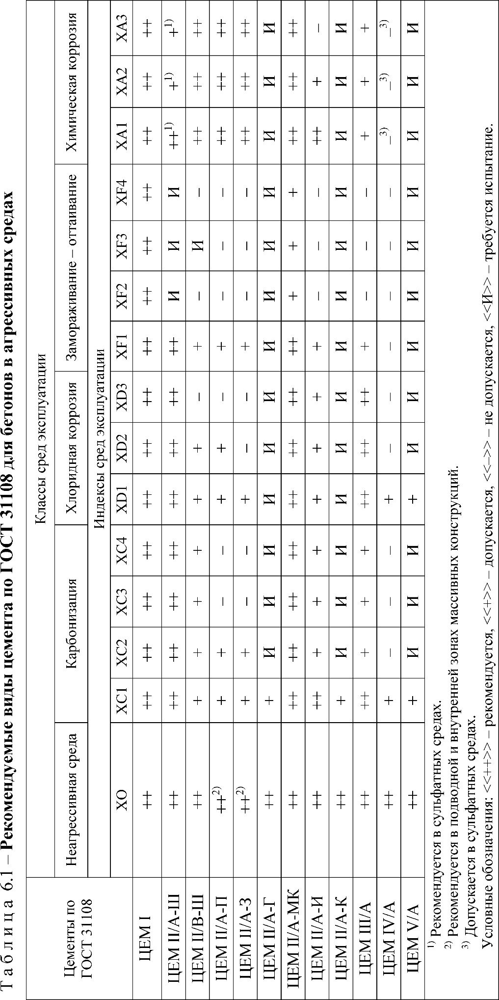

СП 229.1325800.2014 «Железобетонные конструкции подземных сооружений и коммуника»
О документе: разработчики, утверждение, регистрация, ключевые слова
СВОД ПРАВИЛ
СП 229.1325800.2014
- 1 Исполнители -Общество с ограниченной ответственностью «Интерстройсервис ИНК» (ООО «Интерстройсервис ИНК»), Государственное унитарное предприятие города Москвы «Научно -исследовательский институт московского строительства «НИИМосстрой» (ГУП «НИИМосстрой), Общество с ограниченной ответственностью «Научно -инженерный Центр «Стройнаука» (ООО «НИЦ «Стройнаука»), Научно -исследовательский, проектно -конструкторский и технологический институт бетона и железобетона им. А.А. Гвоздева (НИИЖБ им. А.А. Гвоздева), Открытое акционерное общество «Конструкторско -технологическое бюро бетона и железобетона» (ОАО «КТБЖБ»)
- 2 ВНЕСЕН Техническим комитетом по стандартизации ТК 46 5 «Строительство», Федеральным автономным учреждением «Федеральный центр нормирования, стандартизации и технической оценки соответствия в строительстве» (ФАУ «ФЦС»)
- 3 ПОДГОТОВЛЕН К УТВЕРЖДЕНИЮ Департаментом градостроительной деятельности и архитектуры Министерства строительства и жилищно -коммунального хозяйства Российской Федерации (Минстрой России)
- 4 УТВЕРЖДЕН Приказом Министерства строительства и жилищно -коммунального хозяйства Российской Федерации от 2 6 декабря 2014 г. № 914/пр и введен в действие с 19 января 201 5 г.
- 5 ЗАРЕГИСТРИРОВАН Федеральным агентством по техническому регулированию и метрологии (Росстандарт)
ВВЕДЕН ВПЕРВЫЕ
Информация об изменениях к настоящему своду правил , а также тексты изменений и поправок размещаются в информационной системе общего пользования -на официальном сайте Министерства строительства и жилищно -коммунального хозяйства Российской Федерации в сети Интернет
© Минстрой России, 2014
Дата введения -2015-01-19
Введение
В настоящем документе приведены требования, соответствующие целям Федерального закона от 3 0 декабря 200 9 г. № 384ФЗ «Технический регламент о безопасности зданий и сооружений» с учетом части 1 статьи 4 6 Федерального закона от 2 7 декабря 200 2 г. № 184 -ФЗ «О техническом регулировании».
Свод правил выполнен авторским коллективом: В.В. Аладьин (ООО «Интерстройсервис ИНК»), Б.В. Ляпидевский , А.В. Безруков (ГУП «НИИМосстрой»), В.И. Савин , Т.А. Кузьмич , С.Е. Соколова , А.А. Костин (ООО «Научно -инженерный центр «Стройнаука»), В.Ф. Степанова (НИИЖБ им. А.А. Гвоздева), Л.И. Кошелева (ОАО «КТБЖБ») .
1Область применения
Настоящий свод правил разработан в развитие ГОСТ 31384 и СП 28.13330 и распространяется на проектирование защиты от коррозии бетонных и железобетонных конструкций городских подземных сооружений (фундаменты, заглубленные ниже планировочной отметки земли, подземные части жилых и общественных зданий, подземные паркинги и гаражи, транспортные тоннели, сооруженные открытым способом, тоннели метрополитенов, сооружаемых открытым способом, подземные пешеходные переходы и т.д.), а также подземных инженерных коммуникаций (водосточные, водопроводные, канализационные коллекторы и тоннели, силовые кабели, теплопроводы, водопроводы и другие коммуникационные каналы).
Подземные сооружения и коммуникации проектируют и возводят из бетонов на цементных вяжущих в соответствии с требованиями: СП 21.13330, СП 22.13330, СП 25.13330, СП 30.13330, СП 31.13330, СП 32.13330, СП 34.13330, СП 35.13330, СП 43.13330, СП 44.13330, СП 46.13330, СП 50.13330, СП 56.13330, СП 63.13330, СП 78.13330, СП 79.13330, СП 87.13330, СП 112.13330, СП 117.13330, СП 118.13330, СП 120.13330, СП 122.13330, СП 124.13330, СП 129.13330, СП 131.13330.
Свод правил устанавливает требования, учитываемые при проектировании защиты от коррозии бетонных и железобетонных конструкций подземных сооружений и коммуникаций, а также при строительстве, эксплуатации, ремонте и реконструкции подземных сооружений и коммуникаций.
При проектировании защиты от коррозии восстанавливаемых или реконструируемых подземных сооружений и коммуникаций следует учитывать материалы мониторинга и предусматривать выполнение работ по обследованию и анализу коррозионного состояния отдельных конструкций и их элементов, а также всего сооружения в целом.
Проектирование, строительство, контроль качества и приемка работ антикоррозионной защиты должны предусматривать анализ коррозионного состояния конструкций и защитных покрытий с учетом вида и степени агрессивности среды в условиях эксплуатации.
2Нормативные ссылки
В настоящем своде правил приведены ссылки на следующие нормативные документы:
ГОСТ 9.032-74 Единая система защиты от коррозии и старения. Покрытия лакокрасочные. Группы, технические требования и обозначения
Reinforced concrete structures of underground and utility systems. Protection against corrosion
| ГОСТ 12.1.005-88 Система стандартов безопасности труда. Общие санитарно - гигиенические требования к воздуху рабочей зоны ГОСТ 12.3.005-75 Система стандартов безопасности труда. Работы окрасочные. |
ГОСТ
15836-79
Мастика битумно
- резиновая изоляционная. Технические условия
- ГОСТ 15879-70 Стеклорубероид. Технические условия
- ГОСТ 22263-76 Щебень и песок из пористых горных пород. Технические условия
- ГОСТ 22266-94 Цементы сульфатостойкие. Технические условия
- ГОСТ 23732-2011 Вода для бетонов и строительных растворов. Технические условия
- ГОСТ 24211-2008 Добавки для бетонов и строительных растворов. Общие технические условия
- ГОСТ 26633-2012 Бетоны тяжелые и мелкозернистые. Технические условия
- ГОСТ 28574-90 Защита от коррозии в строительстве. Конструкции бетонные и железобетонные. Методы испытаний адгезии защитных покрытий
ГОСТ 30515-97 Цементы. Общие технические условия
- ГОСТ 30547-97 Материалы рулонные кровельные и гидроизоляционные. Общие технические условия
- ГОСТ 30693-2000 Мастики кровельные и гидроизоляционные. Общие технические условия
- ГОСТ 31108-2003 Цементы общестроителные. Технические условия
- ГОСТ 31383-2008 Защита бетонных и железобетонных конструкций от коррозии. Методы испытаний
- ГОСТ 31384-2008 Защита бетонных и железобетонных конструкций от коррозии. Общие технические требования
- ГОСТ 31993-2013 Материалы лакокрасочные. Определение толщины покрытия
- ГОСТ Р 9.414-2012 Единая система защиты от коррозии и старения. Покрытия лакокрасочные. Метод оценки внешнего вида
- ГОСТ Р 52491-2005 Материалы лакокрасочные, применяемые в строительстве. Общие технические условия
- СП 20.13330.2011 « СНиП 2.01.0785* Нагрузки и воздействия»
- СП 21.13330.2012 « СНиП 2.01.09-91 Здания и сооружения на подрабатываемых территориях и просадочных грунтах»
- СП 22.13330.2011 « СНиП 2.02.0183* Основания зданий и сооружений»
- СП 25.13330.2012 « СНиП 2.02.04-88 Основания и фундаменты на вечномерзлых грунтах»
- СП 28.13330.2012 « СНиП 2.03.11-85 Защита строительных конструкций от коррозии»
- СП 30.13330.2012 « СНиП 2.04.0185* Внутренний водопровод и канализация зданий»
- СП 31.13330.2012 « СНиП 2.04.0284* Водоснабжение. Наружные сети и сооружения»
- СП 32.13330.2012 « СНиП 2.04.03-85 Канализация. Наружные сети и сооружения»
- СП 34.13330.2012 « СНиП 2.05.0285* Автомобильные дороги»
- СП 35.13330.2011 « СНиП 2.05.0384* Мосты и трубы»
- СП 43.13330.2012 « СНиП 2.09.03-85 Сооружения промышленных предприятий»
- СП 44.13330.2011 « СНиП 2.09.0487* Административные и бытовые здания»
- СП 46.13330.2012 « СНиП 3.06.04-91 Мосты и трубы»
- СП 49.13330.2010 « СНиП 12-03-2001 Безопасность труда в строительстве. Часть 1. Общие требования»
- СП 50.13330.2012 « СНиП 23-02-2003 Тепловая защита зданий»
- СП 56.13330.2011 « СНиП 31-03-2001 Производственные здания»
СП 63.13330.2012 « СНиП 52-01-2003 Бетонные и железобетонные конструкции. Основные положения»
СП 70.13330.2012 « СНиП 3.03.01-87 Несущие и ограждающие конструкции»
СП 78.13330.2012 « СНиП 3.06.03-85 Автомобильные дороги»
СП 79.13330.2012 « СНиП 3.06.07-86 Мосты и трубы. Правила обследований и испытаний»
СП 87.13330.2011 « СНиП Ш -44-77 Тоннели железнодорожные, автодорожные и гидротехнические. Метрополитены»
СП 112.13330.2011 « СНиП 21-01-97 Пожарная безопасность зданий и сооружений»
СП 117.13330.2011 « СНиП 31-05-2003 Общественные здания административного назначения»
СП 118.13330.2012 « СНиП 31-06-2009 Общественные здания и сооружения».
- СП 120.13330.2012 « СНиП 32-02-2003 Метрополитены»
СП 122.13330.2012 « СНиП 32-04-97 Тоннели железнодорожные и автодорожные».
- СП 124.13330.2012 « СНиП 41-02-2003 Тепловые сети»
- СП 129.13330.2011 « СНиП 3.05.0485* Наружные сети и сооружения водоснабжения и канализации»
Примечание -При пользовании настоящим сводом правил целесообразно проверить действие ссылочных стандартов (сводов правил и/или классификаторов) в информационной системе общего пользования -на официальном сайте национального органа Российской Федерации по стандартизации в сети Интернет или по ежегодно издаваемому информационному указателю «Национальные стандарты», который опубликован по состоянию на 1 января текущего года, и по выпускам ежемесячно издаваемого информационного указателя «Национальные стандарты» за текущий год. Если заменен ссылочный стандарт (документ), на который дана недатированная ссылка, то рекомендуется использовать действующую версию этого стандарта (документа) с учетом всех внесенных в данную версию изменений. Если заменен ссылочный стандарт (документ), на который дана датированная ссылка, то рекомендуется использовать версию этого стандарта (документа) с указанным выше годом утверждения (принятия). Если после утверждения настоящего стандарта в ссылочный стандарт (документ), на который дана датированная ссылка, внесено изменение, затрагивающее положение, на которое дана ссылка, то это положение рекомендуется применять без учета данного изменения. Если ссылочный стандарт (документ) отменен без замены, то положение, в котором дана ссылка на него, рекомендуется применять в части, не затрагивающей эту ссылку. Сведения о действии сводов правил можно проверить в Федеральном информационном фонде технических регламентов и стандартов.
3Термины и определения
В настоящем своде правил применены следующие термины с соответствующими определениями.
- 3.1бассейн канализования
- Часть территории городского или сельского поселения, ограниченная линиями водораздела, с которой сточные воды поступают в канализационный коллектор или тоннель.
- 3.2блок обделки
- Криволинейный элемент (сегмент) в составе кольца обделки.
- 3.3воздействие окружающей среды
- Не силовое воздействие на бетон в конструкции или сооружении, вызванное атмосферными или иными проявлениями, приводящими к изменению структуры бетона или состояния арматуры.
- 3.4воздействие агрессивное (коррозионное)
- Воздействие агрессивной среды, вызывающее коррозию бетона, арматуры или железобетона.
- 3.5грунт
- Горные породы, почвы, техногенные образования, представляющие собой многокомпонентную и многообразную геологическую систему и являющиеся объектом инженерно -хозяйственной деятельности человека.
- 3.6грунтовые воды
- Подземные воды первого от поверхности земли постоянного водоносного горизонта . Примечание: Они образуются за счет насыщения атмосферными осадками, водами рек и озер, притоком поверхностных вод. Из всех видов грунтовых вод особое место занимает так называемая «верховодка» -сезонное скопление вод в верхнем водонасыщенном слое грунта над водоупорными глинистыми или суглинистыми породами.
- 3.7гидрофобизация бетона
- Обработка поверхностного слоя бетона гидрофобизирующими веществами, уменьшающими смачивание поверхности и капиллярное всасывание воды бетоном.
- 3.8долговечность при эксплуатации
- Свойство строительных конструкций, зданий и сооружений противостоять химическим, физическим и другим воздействиям в течение длительных сроков без ухудшения проектных характеристик.
- 3.9защитное сооружение гражданской обороны
- Инженерное сооружение, предназначенное для укрытия людей, техники и имущества от опасностей, возникающих в результате последствий аварий и катастроф на потенциально опасных объектах либо стихийных бедствий в районах размещения этих объектов, а также от воздействия современных средств поражения.
- 3.10защита от коррозии (антикоррозионная защита)
- Способы и средства, предотвращающие или уменьшающие коррозию бетонных и железобетонных конструкций, арматуры, закладных деталей, связей.
- 3.11защита от коррозии вторичная
- Защита от коррозии, достигаемая ограничением или исключением воздействия агрессивной среды путем окраски, пропитки, изоляции и другими мерами, после изготовления конструкции.
- 3.12защитное лакокрасочное покрытие
- Покрытие на поверхности строительного изделия или конструкции из отвержденного лакокрасочного материала, состоящее из одного или нескольких слоев, адгезионно связанных с защищаемой поверхностью.
- 3.13защитное покрытие бетона или арматуры
- Покрытие, создаваемое на поверхности бетона или арматуры для защиты от коррозии.
- 3.14защитная пропитка
- Заполнение пор поверхностного слоя бетона строительной конструкции или изделия материалами, стойкими к воздействию агрессивной среды.
- 3.15камера, колодец на инженерных коммуникациях и сооружениях
- Подземное сооружение объемом от 0, 2 м² и более, расположенное на трассе подземных инженерных коммуникаций и сооружений и предназначенное для осмотра, ремонта, контроля за работой подземных инженерных коммуникаций и сооружений.
- 3.16канал
- Подземное закрытое горизонтальное или наклонное протяженное непроходное сооружение высотой до 170 0 мм, предназначенное для размещения коммуникаций (инженерных сетей, электрокабелей, воздуховодов, лотков для стока жидкостей и др.).
- 3.17канализационный коллектор
- Трубопровод внутренним диаметром от 1, 0 до 2, 0 м, служащий для сбора и отвода бытовых, промышленных вод.
- 3.18канализационный тоннель
- Искусственное подземное сооружение внутренним диаметром более 2, 0 м, служащее для сбора и отвода сточных вод от канализационных коллекторов на крупные насосные станции и очистные сооружения.
- 3.19канализация
- Отведение бытовых, промышленных, дождевых и общесплавных сточных вод.
- 3.20коммуникационный коллектор
- Тоннель, предназначенный для прокладки в нем тепловых сетей, водопроводов, канализации, воздуховодов, силовых электрических кабелей напряжением до и выше 100 0 В, кабелей связи, контрольных кабелей и прочих коммуникаций.
- 3.21коэффициент наполнения сточных вод в канализационном коллекторе или тоннеле
- Отношение глубины воды в коллекторе или тоннеле к его диаметру.
- 3.22коэффициент неравномерности расхода сточных вод
- Отношение максимального расхода к среднесуточному расходу сточных вод.
- 3.23насосная станция
- Сооружение, включающее в себя подземный резервуар, отделение с насосными агрегатами, а также надземный павильон.
- 3.24обделка канализационного коллектора или тоннеля
- Несущая постоянная конструкция, закрепляющая выработку подземного сооружения и образующая его внутреннюю поверхность.
- 3.25обработка поверхности защитная
- Физическая, химическая или электрохимическая обработка, повышающая коррозионную стойкость поверхностного слоя строительного материала в изделии или конструкции.
- 3.26подземные инженерные коммуникации
- Коммуникации, расположенные в подземном пространстве и включающие в себя: водосточные, водопроводные, канализационные коллекторы; силовые кабели; кабели связи; контрольные кабели; канализации; теплопроводы; водопроводы; водостоки и другие подземные инженерные коммуникации.
- 3.27подземные инженерные сооружения
- Сооружения, размещенные в подземном пространстве и включающие в себя: коммуникационные коллекторы, трубопроводы, станции, бойлерные, вентиляционные, калориферные шахты и камеры, колодцы, защитные сооружения гражданской обороны, а также связанные с ними надземные сооружения, в том числе трансформаторные подстанции, центральные тепловые пункты, ремонтно -эксплуатационные комплексы и постройки, диспетчерские пункты.
- 3.28подземные сооружения
- Заглубленные части (полностью или частично) жилых, общественных и производственных зданий и сооружений, а также тоннели автомобильных дорог и пешеходных переходов ниже планировочной отметки земли, включая уникальные объекты (заглубление подземной части которых ниже планировочной отметки земли более чем на 1 0 м).
- 3.29покрытие проникающего действия
- Покрытие на поверхности бетона, которое проникает в бетон и в результате полимеризации или кристаллизации составляющих его компонентов повышает водонепроницаемость бетона.
- 3.30сильная степень агрессивности
- Степень агрессивного воздействия на бетонные и железобетонные конструкции, при которой разрушение бетона и/или потеря защитного действия его по отношению к стальной арматуре за 5 0 лет эксплуатации распространяется на глубину более 2 0 мм.
- 3.31средняя степень агрессивности
- Степень агрессивного воздействия на бетонные и железобетонные конструкции, при которой разрушение бетона и/или потеря защитного действия его по отношению к стальной арматуре за 5 0 лет эксплуатации распространяется на глубину до 2 0 мм.
- 3.32слабая степень агрессивности
- Степень агрессивного воздействия на бетонные и железобетонные конструкции, при которой разрушение бетона и/или потеря защитного действия его по отношению к стальной арматуре за 50 лет эксплуатации распространяется на глубину до 1 0 мм.
- 3.33сохранность подземных инженерных коммуникаций и сооружений
- Состояние целостности и защищенности подземных инженерных коммуникаций и сооружений, обеспечивающее их функционирование.
- 3.34среда эксплуатации
- Сумма химических, биологических и физических воздействий, которым подвергается бетон и арматура в процессе эксплуатации, и которые не учитывают, как нагрузку на конструкцию в строительном расчете.
- 3.35срок эксплуатации
- Период, в течение которого качество бетона в конструкции соответствует проектным требованиям при выполнении правил эксплуатации здания или сооружения.
- 3.36система лакокрасочного защитного покрытия
- Система, состоящая из двух или нескольких слоев лакокрасочного покрытия, защитная способность которой является результатом сочетания свойств всех слоев.
- 3.37внешний слой лакокрасочного защитного покрытия
- Слой в системе лакокрасочного защитного покрытия, непосредственно соприкасающийся с коррозионной средой.
- 3.38грунтовочный слой лакокрасочного защитного покрытия
- Слой в системе лакокрасочного защитного покрытия, наносимый непосредственно на защищаемую поверхность и обеспечивающий адгезию защитного покрытия с защищаемым материалом.
- 3.39тоннель (туннель)
- Протяженное подземное сооружение высотой 2 м и более до выступающих конструкций, предназначенное для прокладки железных и автомобильных дорог, пешеходных переходов, коммуникаций.
- 3.40шахтный ствол
- Вертикальная выработка для обслуживания закрытой проходки коллектора или тоннеля (монтажа или демонтажа проходческого комплекса, выдачи грунта, транспортирования строительных конструкций и материалов).
- 3.41поверхностные (дождевые, ливневые, талые) сточные воды
- Сточные воды, которые образуются в процессе выпадения дождей и таяния снега.
- 3.42система канализации
- Совокупность взаимосвязанных сооружений, предназначенных для сбора, транспортирования, очистки сточных вод различного происхождения и сброса очищенных сточных вод в водоем -водоприемник или в подачу на сооружения оборотного водоснабжения. Включает в себя: канализационные сети (в том числе снегоплавильные пункты и сливные станции), насосные станции, регулирующие и аварийно -регулирующие резервуары и очистные сооружения.
- 3.43взвешенные вещества
- Показатель, характеризующий количество примесей, которое задерживается на бумажном фильтре при фильтровании пробы.
- 3.44первичная защита от коррозии
- Защита, достигаемая посредством выбора исходных компонентов, изменения состава или структуры строительного материала до изготовления или в процессе изготовления конструкции.
- 3.45специальная защита от коррозии
- Защита, реализуемая изменением условий эксплуатации, уменьшением степени агрессивного воздействия среды, электрохимическими (катодная, протекторная защита), другими специальными методами.
- 3.46защитный слой бетона
- Слой бетона от наружной поверхности железобетонной конструкции до ближайшей поверхности арматуры, защищающей арматуру от коррозии.
- 3.47карбонизация бетона
- Процесс взаимодействия цементного камня с углекислым газом, снижение щелочности и жидкой фазы бетона.
- 3.48мониторинг при эксплуатации
- Процесс инструментальных наблюдений за состоянием конструкций в период эксплуатации.
4Общие положения
Первичная защита предусматривает сочетание определенных требований, предъявляемых непосредственно к материалам, из которых изготавливают конструкцию, и к самим конструкциям. Реализация этих требований в процессе проектирования и изготовления конструкций максимально гарантирует длительную эксплуатационную пригодность. Первичную защиту выполняют на весь период эксплуатации.
Вторичная защита предусматривает мероприятия по защите от коррозии поверхностей бетонных и железобетонных конструкций со стороны непосредственного воздействия агрессивной среды, имеет ограниченный срок службы и ее следует возобновлять на основании мониторинга технического состояния конструкций, подземных сооружений и коммуникаций.
- применение для бетона материалов надлежащей коррозионной стойкости, инъекционных растворов, арматуры, неизвлекаемых каналообразователей и т.д.;
- применение добавок, повышающих коррозионную стойкость бетона и его защитную способность по отношению к стальной арматуре, стальным закладным деталям и соединительным элементам;
- подбор эффективных составов бетона;
- снижение проницаемости бетона различными технологическими приемами;
- применение технологических мер, повышающих качество бетона в процессе его изготовления и ухода, максимально устраняющих образование усадочных трещин;
- сохранность конструкций в процессе транспортирования, хранения, монтажа;
- выбор вида и класса арматурных сталей;
- выбор вида и класса неметаллической арматуры;
- выбор рациональных геометрических очертаний и форм конструкций;
- установление дополнительных ужесточающих требований к трещиностойкости и предельно допустимой ширине раскрытия трещин;
- назначение толщины защитного слоя бетона до арматуры с учетом его проницаемости;
- сочетание нагрузок с позиций допустимого длительного раскрытия трещин и т.п.
- лакокрасочными покрытиями, в том числе толстослойными (мастичными);
- оклеечной изоляцией;
- окрасочной битумной гидроизоляцией;
- обмазочными и штукатурными покрытиями;
- облицовкой штучными или блочными изделиями;
- уплотняющей пропиткой поверхностного слоя химически стойкими материалами;
- покрытиями проникающего действия;
- обработкой гидрофобизирующими составами;
- пластмассовой или металлической гидроизоляцией и т.п.
Вторичную защиту применяют в тех случаях, когда защита от коррозии не может быть обеспечена мерами первичной защиты. Вторичная защита, как правило, требует возобновления во времени.
- геохимических характеристик грунтов и грунтовых вод в районе строительства;
- характеристик агрессивных компонентов (по виду и концентрации газов, твердых и жидких сред) в атмосфере окружающего воздуха и на поверхностях конструкций;
- наличия в районе строительства зданий и сооружений с потенциальной возможностью загрязнения воздушной среды, грунтов и грунтовых вод и т.п.; б) на основании этих сведений устанавливают степень агрессивного воздействия среды к бетону и железобетону; в) для данного вида и степени агрессивного воздействия среды устанавливают требования к исходным материалам и дополнительные требования к элементам сооружения технологического и расчетно -конструктивного характера (первичная защита); г) выбирают вид и способ защиты от коррозии поверхностей конструкций и узлов их сопряжения в случаях, когда их долговечность на стадии проектирования не может быть обеспечена мерами первичной защиты; д) в ответственных местах (узлах) бетонных и железобетонных конструкций, испытывающих в процессе эксплуатации воздействие агрессивной среды (газов, жидкостей, паров и пр.) следует предусматривать установку технических устройств для постоянного мониторинга скорости коррозии.
Неагрессивные подземные воды отмечены на единичных площадках. Однако на этих участках, в связи с влиянием техногенных факторов, уровень агрессивности подземных и сточных вод значительно выше.
Таблица 4.1 Среды эксплуатации конструкций подземных сооружений и коммуникаций, вызывающие коррозию бетона вследствие реакции щелочей с кремнеземом заполнителей
| Индекс | Среда эксплуатации | Пример конструкций |
|---|---|---|
| В зависимости от влажности среду классифицируют по следующим признакам | В зависимости от влажности среду классифицируют по следующим признакам | В зависимости от влажности среду классифицируют по следующим признакам |
| WO | Бетон находится в сухой среде | Конструкции внутри помещения. Конструкции в наружном воздухе вне действия осадков, поверхностных вод и грунтовой влаги и/или не постоянно подвергаются действию воздуха с относительной влажностью более 8 0% |
| WF | Бетон часто или длительно увлажняют | Поверхности конструкции, не защищенные от воздействия осадков, грунтовых вод и конденсата. Конструкции, часто подвергающиеся действию конденсата, например, трубы, станции теплообменников, фильтровальные камеры |
| WA | Бетон, на который помимо воздействий среды WF действуют часто или длительно щелочи, поступающие извне | Конструкции, на которые воздействуют жидкие агрессивные среды без дополнительного динамического воздействия (например, канализация, сточные воды и т.д.) |
| WS | Бетон с высокими динамическими нагрузками и прямым воздействием аэрозолей, выхлопных газов, грязи | Конструкции, подвергающиеся воздействию противогололедных солей и дополнительно высоким динамическим нагрузкам (например, бетон перекрытий многоэтажных автостоянок, гаражей) |
Если на бетонные конструкции воздействуют грунтовые и сточные воды с агрессивными химическими агентами, коррозионную среду классифицируют по ГОСТ 31384 , таблица А.2 (приложение А).
При превышении предела содержания или действия химических агентов, не указанных в таблице, должен быть проведен специальный анализ и выданы соответствующие рекомендации.
1) герметизацию технологического оборудования и выбор соответствующих способов транспортирования и дозирования агрессивного сырья, а также приема и передачи полуфабрикатов из него, исключающих попадание агрессивных веществ на строительные конструкции;
2) группирование технологического оборудования и установок, не поддающихся герметизации и предназначенных для обработки веществ, оказывающих одинаковые агрессивные воздействия на строительные конструкции, и размещение их в отдельных помещениях, зданиях или вне зданий;
3) нейтрализацию неизбежных потерь и отходов агрессивных веществ. Сбор агрессивных сточных вод рекомендуется осуществлять вблизи мест их возникновения с предварительной нейтрализацией и очисткой в цехе перед окончательной очисткой. Каналы сточных вод следует располагать вдали от фундаментов подземных сооружений;
4) отопление, в случае необходимости, подземных сооружений с высокой влажностью воздуха для предотвращения конденсации водяного пара;
5) общую вентиляцию помещений или местный отсос агрессивных паров и газов;
6) установку технических устройств для постоянного инструментального мониторинга скорости коррозии.
Расчет железобетонных конструкций подземных сооружений и коммуникаций выполняют по соответствующим нормативным документам, касающимся толщины защитного слоя бетона, категории требований к трещиностойкости, доступной ширины непродолжительного и продолжительного раскрытия трещин и т.п.
5Классификация агрессивных сред и степень их агрессивного воздействия
5.1Общие положения
К первой категории (1) следует относить конструкции и их элементы, которые в процессе эксплуатации защищены от непосредственного попадания атмосферных осадков, но при этом подвержены воздействию наружной температуры и влажности окружающего воздуха и агрессивных газов. К конструкциям первой категории можно отнести элементы стен и перекрытий подземных торговых учреждений, автостоянок, гаражей, тоннелей, путепроводов, коллекторов коммуникационного назначения, элементы для отвода сточных вод и прокладки коммуникаций (теплотрассы, трубопроводы, водопроводные и канализационные сети).
Ко второй категории (2) следует относить все конструкции и их элементы, эксплуатирующиеся на открытом воздухе, которые подвержены воздействию атмосферных осадков и агрессивных сред, за исключением конструкций и их элементов, отнесенных к третьей категории.
К третьей категории (3) следует относить конструкции и их элементы, эксплуатирующиеся на открытом воздухе, подвергающиеся воздействию атмосферных осадков и агрессивных газов и имеющие контакт с твердыми и жидкими агрессивными средами, а также элементы конструкций, на которые непосредственно попадают загрязнения с колес автотранспорта. К третьей категории относятся: дорожные покрытия из монолитного и сборного бетона и железобетона, нижние части подпорных стенок, опоры эстакад и путепроводов, стены тоннелей (на участках, примыкающих к портальной части), большую часть элементов обустройства автомобильных дорог, а также наружные грани плит и крайних балок пролетных строений, пандусы многоярусных паркингов, гаражей и т.д.
Принадлежность элементов конструкций к категории условий эксплуатации допускается выбирать по таблице 5.1.
Оценка агрессивности среды по отношению к бетону и железобетону элементов конструкций подземных сооружений и коммуникаций должна быть проведена с учетом комплексного воздействия газообразных, твердых и жидких сред в сочетании с воздействием циклического замораживания и оттаивания при различных температурах.
Таблица 5.1 Принадлежность элементов конструкций к категории условий эксплуатации
| Наименование сооружения | Конструкции сооружения и их составные части | Местоположение участков | Категория условий эксплуа - тации |
|---|---|---|---|
| Защитные сооружения гражданской обороны | Опоры Ригели, пролетные строения Плиты покрытий перекрытий, ограждающие конструкции, элементы водоотвода Подпорные стенки | В зоне контакта с грунтовыми водами | 3 2 3 |
| Подземные сооружения промышленных предприятий | Опоры Ригели, пролетные строения Плиты проезжей части Подпорные стенки Лестничные сходы | На открытом воздухе В зоне контакта с жидкой средой 1 ) На открытом воздухе В зоне контакта с жидкой средой 1 ) На участках, примыкающих к входам и выходам | 3 2 3 2 3 2 3 |
| Транспортные тоннели, включая метрополитены | Стены, перекрытия, колонны Плиты проезжей части | Внутри протяженных тоннелей 2 ) На участках, примыкающих к портальной части: - на открытом воздухе - в зоне контакта с жидкой средой 1 ) Внутри протяженных тоннелей 2 ) На участках, примыкающих к портальной части 3 ) | 1 2 3 2 3 |
Окончание таблицы 5.1
| Наименование сооружения | Конструкции сооружения и их составные части | Местоположение участков | Категория условий эксплуа - тации |
|---|---|---|---|
| Подземные переходы (пешеходные сооружения тоннельного типа) | Стенки, лестничные сходы Ригели, плиты покрытия | Внутри протяженных переходов 2 ) На участках, примыкающих к выходам: - на открытом воздухе - в зоне контакта с жидкой средой 1 ) Внутри протяженных переходов 2 ) На участках, примыкающих к выходам | 1 2 3 1 2 |
| Подземные автостоянки и гаражи | Стены Перекрытия Колонны Ригели | Под жилищно - гражданскими зданиями | 2 |
| Подземные административно - бытовые комплексы, торговые учреждения, кафе, кинозалы | Стены Перекрытия Колонны Фундаменты | Под жилищно - гражданскими зданиями | 2 |
| Коллекторы коммуникационного назначения | Элементы ограждения | Подземная прокладка и обслуживание телефонных и оптоволоконных линий связи | 2 |
| Коллекторы и элементы для отвода сточных вод и прокладки коммуникаций | Элементы для отвода сточных вод и прокладки коммуникаций | На открытом воздухе В зоне контакта с агрессивной средой | 3 1 |
| Коллекторы и тоннели хозяйственно - бытовой и промышленной канализации | Обделка коллектора (тоннеля), стены, перекрытия, колодцы, ограждения, шахтные стволы | Внутри зоны контакта с агрессивной средой | 1 |
| Коллекторы для подземной прокладки водопроводных, тепловых и канализационных сетей | Элементы ограждения | Коммуникационные коллекторы под зданиями, сооружениями и автодорогами | 2 |
1 ) За зону контакта с жидкой средой принимают участки конструкций, располагающиеся на высоте до 1,5 м от горизонтальной поверхности проезжей или пешеходной части.
2 ) К протяженным тоннелям и подземным переходам относят сооружения длиной более 60 м и 30 м соответственно .
3 ) За участки тоннелей, примыкающих к портальной части, и участки подземных переходов, примыкающих к входам и выходам, принимают части сооружений протяженностью не менее 20 м и 10 м соответственно.
Степень агрессивного воздействия комплексных сред приведена в таблице 5.2 в зависимости от зоны влажности по СП 131.13330. Минимальные марки бетона по водонепроницаемости при данной оценке находятся в интервале W4-W 8. Требуемые значения минимальных марок бетона по водонепроницаемости рассматривают в разделе 6.
Таблица 5.2 Степень агрессивного воздействия комплексной среды
| Категория условий эксплуатации | Степень агрессивного воздействия среды к бетону и железобетону конструкций в зоне влажности | Степень агрессивного воздействия среды к бетону и железобетону конструкций в зоне влажности | Степень агрессивного воздействия среды к бетону и железобетону конструкций в зоне влажности | Степень агрессивного воздействия среды к бетону и железобетону конструкций в зоне влажности |
|---|---|---|---|---|
| Категория условий эксплуатации | Нормальная | Нормальная | Влажная | Влажная |
| Категория условий эксплуатации | К бетону | К железобетону | К бетону | К железобетону |
| 1 | Неагрессивная | Слабоагрессивная | Неагрессивная | Слабоагрессивная |
| 2 | Неагрессивная | Слабоагрессивная 1) | Слабоагрессивная 2) | Среднеагрессивная |
| 3 | Сильноагрессивная | Сильноагрессивная | Сильноагрессивная | Сильноагрессивная |
Степень агрессивного воздействия сред для конструкций из бетонов марок по водонепроницаемости W10 и выше, относящихся к 1 -й и 2 -й категориям условий эксплуатации, может понижаться в зависимости от применяемых бетонов и степени их изученности.
Такие случаи характерны для большой части конструкций подземных сооружений. Так, например, воздействию сильноагрессивных жидких сред, относящихся к третьей категории по среде эксплуатации, подвержены только нижние части подпорных стенок, участки стен открытых конструкций (лестничных сходов в подземные переходы и т.п.). Участки конструкций, на которые воздействуют сильноагрессивные жидкости, составляют, как правило, порядка 1,0 -1,5 м от верха проезжей или пешеходной части. В то же время, вышележащие части упомянутых конструкций находятся в условиях воздействия слабо -или среднеагрессивной среды.
При выборе решения о защите конструкций (выполнять ли всю конструкцию или только ее часть с повышенными требованиями, обеспечивающими защиту в сильноагрессивной среде) следует руководствоваться экономической целесообразностью, исходя из показателей, характеризующих технологичность, стоимость и трудоемкость материалов и работ, установленных межремонтных сроков службы конструкций.
5.2Классификация и степень агрессивного воздействия грунтов и грунтовых вод на бетон и арматуру строительных конструкций
- характеристики агрессивности грунтов и грунтовых вод: вид и концентрация агрессивных веществ, частота и продолжительность агрессивного воздействия;
- условия эксплуатации: температурно -влажностный режим в сооружении, вероятность попадания на конструкции агрессивных веществ, наличие и количество пыли (в особенности пыли, содержащей соли) и газовых сред;
- климатические условия района строительства;
- результаты инженерно -геологических изысканий;
- предполагаемые изменения степени агрессивности среды в период эксплуатации подземных сооружений и инженерных коммуникаций;
- механические и температурные воздействия на конструкции;
- возможные контакты (проливы) с агрессивными веществами.
При наличии грунтовой воды оценку агрессивной среды проводят в зависимости от химического состава грунтовой воды по ГОСТ 31384 , таблицы Б.1 -Б. 4 (приложение Б).
При воздействии на конструкции подземных сооружений и инженерных коммуникаций нескольких агрессивных сред необходимо определять соответствующие зоны конкретных агрессивных воздействий и степени агрессивности в этих зонах.
5.3Качественная характеристика поверхностного стока вод с селитебных территорий и площадок предприятий
На крупных предприятиях, включающих в себя различные производства, поверхностный сток с отдельных территорий по составу примесей может заметно отличаться от стока с других участков и общего стока, что должно быть учтено при разработке технологии очистки и схемы его отведения.
6Требования к материалам и конструкциям (первичная защита)
Первичную защиту реализуют посредством выполнения требований технологического и расчетно -конструктивного характера.
Первичная защита предусматривает сочетание определенных требований, предъявляемых непосредственно к материалам, из которых изготавливают конструкции, и к самим конструкциям. Реализация этих требований в процессе проектирования и изготовления конструкций подземных сооружений и коммуникаций максимально гарантирует длительную эксплуатационную пригодность. Первичную защиту выполняют на весь период эксплуатации конструкции.
6.1Технологические требования к бетону и его составляющим
Срок службы бетонных или железобетонных конструкций, относящихся к 3й категории условий эксплуатации, должны обеспечивать меры первичной защиты.
6.1.2 Требования к материалам для приготовления бетонов
6.1.2.1 В качестве вяжущих для бетонов рекомендуется применять портландцементы по ГОСТ 10178, ГОСТ 30515, ГОСТ 31108 с содержанием трехкальциевого алюмината не более 8 % . Массовая доля щелочных оксидов ( Na2O+ K2O ) в пересчете на Na2O ( Na2O + 0,658 K2O ) не должна превышать 0,6 %.
Рекомендуемые виды цементов по ГОСТ 31108 для бетонов в зависимости от класса сред эксплуатации приведены в таблице 6.1 .
Допускается также применение цементов (вяжущих) низкой водопотребности (ВНВ) с содержанием минеральных добавок не более 10 %-15 % , цементов в сочетании с добавками органоминеральных композиций на основе микрокремнезема серии «МБ» и «Эмбэлит», напрягающих и безусадочных цементов и других вяжущих, приготовленных на цементной основе. При этом необходимо соответствие этих материалов утвержденным документам на них и наличие данных по обеспечению коррозийной стойкости и морозостойкости бетонов на указанных вяжущих и стойкости арматуры в этих бетонах.
6.1.2.2 В качестве мелкого заполнителя следует использовать кварцевый песок по ГОСТ 8736 класса I , а также пористый песок по ГОСТ 9757. Песок класса II по ГОСТ 8736 допускается применять для бетонов конструкций, эксплуатирующихся в неагрессивных средах.
- 6.1.2.3 В качестве крупного заполнителя для бетонов следует использовать фракционированный щебень из изверженных пород, гравий и щебень из гравия марки по дробимости не ниже 80 0 по ГОСТ 8267.
Щебень из осадочных пород по ГОСТ 8267, если он однороден и не содержит слабых прослоек, с маркой по дробимости не ниже 60 0 и водопоглощением не выше 2 % , допускается применять для изготовления конструкций, эксплуатируемых в газообразных, твердых и жидких средах при любой степени агрессивного воздействия, за исключением жидких сред, с водородным показателем рН ниже 4.
Для конструкционных легких бетонов следует применять искусственные и природные пористые заполнители по ГОСТ 9757 и ГОСТ 22263.
6.1.2.4 Для повышения стойкости бетона железобетонных конструкций, эксплуатируемых в агрессивных средах, следует применять добавки по ГОСТ 24211, снижающие проницаемость бетона или повышающие его химическую стойкость и морозостойкость, повышающие защитную способность бетона по отношению к стальной арматуре, а также повышающие стойкость бетона в условиях воздействия биологически активных сред.
Общее количество химических добавок при их применении для приготовления бетона не должно превышать 5 % от массы цемента. При б ó льшем количестве добавок требуется экспериментальное подтверждение коррозионной стойкости бетона.
Добавки, применяемые при изготовлении железобетонных изделий и конструкций, не должны оказывать коррозионного воздействия на бетон и арматуру.
Максимально допустимое содержание хлоридов в бетоне, выраженное в процентах ионов хлоридов к массе цемента, не должно превышать значений, указанных в СП 28.13330.
В состав бетона не допускается введение хлоридов при изготовлении следующих железобетонных конструкций:
- с напрягаемой арматурой;
- с ненапрягаемой проволочной арматурой диаметром 5 мм и менее;
- эксплуатируемых в условиях влажного или мокрого режима.
Не допускается введение хлоридов в состав бетонов и растворов для инъектирования каналов предварительно -напряженных конструкций, а также для замоноличивания швов и стыков сборных и сборно -монолитных железобетонных конструкций.
Возможность применения в составе бетонов добавок электролитов, содержащих нитраты, нитриты, тиоцианаты (роданиды) и формиаты, а также в защитных составах, применяемых для ремонта и восстановления железобетонных конструкций, эксплуатирующихся в условиях воздействия агрессивных сред, должна быть проверена в специализированных лабораториях.
При наличии в заполнителях потенциально реакционно -способных пород не допускается введение в бетон в качестве добавок солей натрия или калия.
Количество вводимых в бетон минеральных добавок следует определять, исходя из требований обеспечения необходимой коррозионной стойкости бетона на уровне не ниже, чем у бетона без таких добавок.
6.1.2.5 Вода для бетонной смеси и увлажнения твердеющего бетона должна соответствовать требованиям ГОСТ 23732. Применение рециклированной и комбинированной (смешанной) воды для бетонов конструкций, предназначенных для эксплуатации в агрессивных средах, допускается при наличии экспериментального подтверждения коррозионной стойкости бетона.
Коррозионная стойкость бетона и железобетона существенно зависит от его проницаемости, основным показателем которой является марка бетона по водонепроницаемости, оцениваемая методами ГОСТ 12730.5.
6.1.3.1 Марка бетона по водонепроницаемости железобетонных конструкций, контактирующих с агрессивными грунтовыми и сточными водами, должна быть не ниже значений, приведенных в ГОСТ 31384 , таблицы Б.1 -Б. 4 (приложение Б).
Для конструкций с повышенными требованиями к непроницаемости (несущие и ограждающие конструкции тоннелей, подземных переходов тоннельного типа, облицовки и т. д.) марку бетона по водонепроницаемости следует принимать не менее W12 независимо от степени агрессивного воздействия среды.
Для бетона элементов обустройства коллекторов и тоннелей, а также пешеходных переходов марку бетона по водонепроницаемости следует принимать не менее W8.
6.1.3.2 Марку бетона по морозостойкости принимают с учетом среднемесячной температуры наиболее холодного месяца. Минимальная марка бетона по морозостойкости железобетонных конструкций толщиной до 0, 5 м приведена в ГОСТ 31384.
Марку бетона по морозостойкости массивных бетонных конструкций (толщиной более 0, 5 м) 1 -й и 2 -й категорий условий эксплуатации принимают соответственно не менее F10 0 и F200.
6.1.3.3 Требования к маркам бетона по водонепроницаемости и морозостойкости должны быть не менее значений, указанных в действующих нормативных документах.
Бетоны конструкций подземных сооружений и конструкций, подвергающихся воздействию воды и знакопеременных температур, марок по морозостойкости более F 150, следует изготавливать с применением воздухововлекающих или микрогазообразующих добавок, а также комплексных добавок на их основе. Объем вовлеченного воздуха в бетонной смеси для изготовления конструкций и изделий должен соответствовать значениям, указанным в ГОСТ 26633 или в нормативных документах на бетоны конкретных видов.
6.1.4 Бетоны повышенных эксплуатационных свойств
В бетонных и железобетонных конструкциях подземных сооружений и коммуникаций рекомендуется применение бетонов с повышенными эксплуатационными свойствами, которые достигаются различными приемами, как правило, технологического характера.
6.1.4.1 Бетоны повышенных эксплуатационных свойств могут быть получены при использовании поликомпонентных модификаторов серии «МБ».
Модификаторы предназначены для применения в тяжелых и мелкозернистых бетонах и представляют собой порошкообразные композиционные материалы на органоминеральной основе полифункционального действия. Их минеральная часть представлена микрокремнеземом (для МБ -01), смесью микрокремнезема с кислой золой -уносом (для МБ -С), термообработанным каолином, гипсом или их смесью с кислой золой -уносом и микрокремнеземом (для Эмбэлита), а органическая часть -суперпластификатором С -3 или его смесью с регуляторами твердения.
В соответствии с техническими условиями модификаторы разных типов подразделяют на марки. Маркировка модификаторов отражает их состав по процентному содержанию суперпластификатора в массе продукта и составляющим минеральной части.
Выбор марки, вида и дозировки модификатора зависит от цели его применения. Пластифицирующая способность «МБ» возрастает с увеличением в его составе дозировки суперпластификатора, а эксплуатационные характеристики бетонов зависят от сочетания и количества различных компонентов в минеральной части «МБ».
6.1.4.2 Модификаторы серии «МБ» позволяют получать высокопрочные бетоны с кубиковой прочностью 4 0-100 МПа (классы В3 0В80) и выше, в том числе с высокой ранней прочностью при нормальном хранении -до 4 0 МПа в возрасте одних суток.
Применение модификаторов «МБ» в бетонах на обычных портландцементах М40 0 или М50 0 и обычных заполнителях из твердых пород обеспечивает нерасслаиваемость и сохраняемость высокоподвижных смесей (марок по удобоукладываемости П 4П5) и высокие эксплуатационные свойства бетонов.
Основой улучшения свойств бетонов является их высокая непроницаемость (марка по водонепроницаемости W12-W20 и выше) и низкая реакционная способность модифицированного цементного камня по отношению ко многим компонентам агрессивной среды, которые определяют повышение целого ряда показателей бетона.
- 6.1.4.3 Введение модификаторов МБ -01 и МБ -С в бетон повышает:
- непроницаемость бетона для воды и газов, в том числе для растворов хлористых солей;
- морозостойкость;
- сульфатостойкость и кислотостойкость;
- защитные свойства бетона по отношению к стальной арматуре и т.д.
6.1.4.4 Введение в состав бетонов модификаторов без структурообразующих добавок обеспечивает их марку по морозостойкости на уровне F200-F 300. Совместное применение модификатора и структурообразующих добавок позволяет получать бетоны с высокими марками по морозостойкости: F600-F1000 (по первому базовому методу ГОСТ 10060).
6.1.4.5 Высокая непроницаемость модифицированных бетонов, изготовленных на среднеалюминатном портландцементе, в определенных случаях обеспечивает такую же степень сульфатостойкости, какой обладают бетоны, изготовленные на низкоалюминатном (сульфатостойком) портландцементе.
6.1.4.6 Наличие модификаторов в составе бетона препятствует взаимодействию щелочей цемента с реакционно -способным кремнеземом заполнителя; при дозировке модификатора в количестве до 20 % массы цемента бетон обладает надежной пассивирующей способностью по отношению к стальной арматуре. При дозировках выше 20 % следует применять ингибиторы коррозии стали.
6.1.4.7 Основным преимуществом бетонов с модификаторами « Эмбэлит » является компенсация усадки бетонов за счет применения компонентов расширяющего действия (каолин и гипс) в составе модификатора. Снижение деформаций усадки особенно важно для мелкозернистых бетонов, для конструкций и сооружений большой протяженности (коллекторы, тоннели, пешеходные переходы и т. д.), а повышение усадочной трещиностойкости -для сооружений повышенной непроницаемости, таких как тюбинги, трубы, колодцы, шахты и т.п.
6.1.4.8 Эксплуатационные характеристики бетонов возрастают с увеличением доли расширяющей композиции в составе минеральной части.
Для получения бетонов с компенсированной усадкой оптимальная дозировка модификатора в зависимости от его марки составляет от 10 % до 20 %.
Наряду с пластифицирующим, стабилизирующим и водоудерживающим действием, модификатор «Эмбэлит» улучшает перекачиваемость и стабильность консистенции бетонных смесей во времени. При возведении массивных конструкций применение этого модификатора способствует понижению тепловыделения бетона.
6.1.4.9 Важным дополнительным положительным фактором производства и применения модификаторов «МБ» является решение экологической проблемы -утилизация пылевидных отходов ферросплавных производств и тепловых электростанций.
Применение модификаторов серии «МБ» не требует специального оборудования, а приемка, хранение и подача материалов укладываются в обычные схемы, существующие на заводах по изготовлению цемента.
6.2Требования к стальной арматуре
- стержневой, проволочной и канатной стальной арматурой, самоанкерующейся в бетоне, или с дополнительной анкеровкой в виде различного рода анкерных устройств;
- стальными арматурными элементами, не имеющими сцепления с бетоном конструкций, располагающимися в каналах или вне конструкций -моностренды (одиночные канаты) или пучки из монострендов.
Группа I . Арматура для конструкций без предварительного напряжения горячекатаная и термомеханически упрочненная, поставляемая в стержнях и мотках.
22 Группа II . Напрягаемая арматура для конструкций с предварительным напряжением, в виде горячекатаных и термомеханически упрочненных стержней с нормированной стойкостью против коррозионного растрескивания, а также высокопрочная арматурная проволока диаметром 3, 5 мм и более и канаты из проволоки диаметром 3, 5 мм и более.
Группа III . Напрягаемая арматура для конструкций с предварительным напряжением в виде горячекатаных и термомеханически упрочненных стержней без нормированной стойкости против коррозионного растрескивания арматурной стали, а также высокопрочная арматурная проволока диаметром менее 3, 5 мм и канаты из проволоки диаметром менее 3, 5 мм.
Группа IV . Неметаллическая композитная арматура, в том числе высокомодульная (ВМ).
Таблица 6.2 Условия применения различных групп арматурных сталей
| Группа стали | Класс арматурной стали 1) | Категория условий эксплуатации |
|---|---|---|
| I | А240, А300, А400, А500С (гк) , А550В, А600, Ат600К, В -I , Вр -I А400С (тм) , А500С (тм) , А500С (хд) , Ат600С | 1, 2, 3 1, 2 2) , 3 2) |
| II | Ат800К, Ат1000К В -II , Вр -II , К7, К19 | 1, 2, 3 |
| III | А800, А1000, Ат800, Ат1000 В -II , Вр -II , К7, К1 9 - при диаметре проволок менее 3, 5 мм | 1, 2 |
| IV | Неметаллическая композитная арматура | 1,2,3 |
Для армирования предварительно напряженных железобетонных конструкций, эксплуатируемых в агрессивных средах, предпочтительнее применять арматурные стали группы II.
Арматурная сталь перед бетонированием не должна иметь коррозионных повреждений в виде слоистой ржавчины и язв. Допускается к применению ненапрягаемая арматура с легким налетом ржавчины (не более 10 0 мкм) и напрягаемая арматура с налетом ржавчины, легко удаляемым мягкой тканью.
Условия хранения напрягаемой арматуры, поставляемой без консервации и упаковки:
- для стержневой арматуры в ненапряженном состоянии -в закрытом помещении при относительной влажности воздуха не более 75 % ;
- для бухт или мотков канатов и проволоки -на стеллажах в горизонтальном положении, исключая контакт с бетонным полом, и без многократного перемещения арматуры с холода в тепло;
- срок хранения в ненапряженном состоянии с момента изготовления арматуры до натяжения не более 1 2 мес, а в напряженном состоянии до антикоррозионной защиты для стержневой арматуры, проволоки, арматурных канатов из параллельных проволок -не более 3 0 сут; для канатов (К -7, К -19) при диаметре проволок ≥ 3, 5 мм -не более 15 сут.
Для напрягаемой арматуры, поставляемой с надежной консервационной защитой и в водонепроницаемой упаковке, при тех же условиях хранения, сроки хранения, включая напряженное состояние, могут быть пролонгированы.
Непосредственно после натяжения и инъецирования высокопрочной арматуры выступающие за пределы анкеров отрезки проволок и канатов, включая их торцы и анкеры, надежно изолируют от попадания и миграции влаги внутрь каната.
6.3Требования к конструкциям
6.3.1.1 Наиболее подверженными коррозионным поражениям элементами железобетонных конструкций являются стальная арматура, стальные закладные детали и связи. Основные причины повреждений коррозионного характера связаны с наличием в окружающей среде или в бетоне железобетонных конструкций агрессивных к стали компонентов и потерей бетоном защитных свойств (карбонизации) по отношению к стали.
Защиту стальных элементов железобетонных конструкций от коррозии обеспечивает главным образом бетон защитного слоя. Сохранность стальной арматуры железобетонных конструкций в цементном бетоне в значительной степени обусловлена толщиной защитного слоя бетона и его непроницаемостью. Толщину защитного слоя бетона определяют наименьшим расстоянием от поверхности конструкции до поверхности ближайшего арматурного элемента.
Для напрягаемой арматуры, размещаемой в закрытых каналах, защитный слой бетона определяют относительно поверхности канала.
Минимально допустимые значения защитных слоев бетона до арматуры, кроме предварительно напряженной арматуры, располагаемой в открытых и закрытых каналах железобетонных конструкций, приведены в таблице 6.3. Для конструкций с предварительным напряжением и неметаллической арматурой АСП, АБП минимальную толщину защитного слоя бетона и марку бетона по водонепроницаемости назначают по СП 28.13330 .
При этом во всех случаях защитный слой бетона в конструкциях должен быть не менее значений, указанных в соответствующих нормативных документах по защите строительных конструкций от коррозии.
Таблица 6.3 Минимальные значения толщины защитного слоя бетона а з c при марках бетона по водонепроницаемости W для бетонных и железобетонных конструкций
| Категория условий | Степень агрессивного воздействия среды | а зс , мм, и марка бетона по водонепроницаемости 1) для арматурной стали группы | а зс , мм, и марка бетона по водонепроницаемости 1) для арматурной стали группы | а зс , мм, и марка бетона по водонепроницаемости 1) для арматурной стали группы |
|---|---|---|---|---|
| эксплуатации | I | II | III | |
| 1 | Неагрессивная | 20 . W4 | 20 . W4 | 20 . W4 |
| 1 | Слабоагрессивная | 20 . W4 | 25 . W4 | 25 , 25 . W6 W8 2 ) |
| 2 | Слабоагрессивная | 25 . W4 | 25 . W6 | 25 . W8 |
| 2 | Среднеагрессивная | 25 . W6 | 25 . W8 | 30 . W8 |
| 3 | Сильноагрессивная | 30 . W8 | 30 . W8 | - |
Для каналов диаметром 11 см защитный слой назначают не менее 50 мм. При диаметрах каналов свыше 11 см принимаемую толщину защитного слоя проверяют расчетом на силовые воздействия и давление раствора при инъецировании канала.
В конструкциях из монолитного бетона толщину защитного слоя увеличивают на 5 мм.
При применении самозаанкеривающейся оцинкованной арматуры или арматуры с защитой другими покрытиями протекторного действия, не снижающими сцепление арматуры с бетоном, толщина защитного слоя бетона может быть уменьшена на 5 мм.
Увеличение эффекта защитных свойств бетона по отношению к стальной арматуре достигают введением в бетон добавок -ингибиторов коррозии стали, которые усиливают защитное действие бетона.
Ингибиторы коррозии стали в бетоне применяют:
- в тонкостенных железобетонных конструкциях при малой толщине защитного слоя, когда есть опасность полной его карбонизации;
- при применении вяжущих с пониженными защитными свойствами;
- при воздействии хлоридных сред.
Для сталей, не склонных к коррозии под напряжением, можно рекомендовать в бетоны комплексные ингибиторы, изготовленные на основе нитрита натрия в сочетании с бурой, бихроматом натрия (калия), фосфатом натрия, нитрит -нитратом кальция, и другие ингибиторы, эффективность которых подтверждена экспериментально.
Подбор составов бетонов с ингибиторами коррозии стали, их дозировку и влияние на свойства бетонов, в том числе и на их коррозионную стойкость, необходимо осуществлять в специализированных организациях, имеющих документально подтвержденные полномочия на вид деятельность данного вида.
6.3.1.2 Напрягаемую арматуру сборных железобетонных конструкций с натяжением на бетон, как правило, располагают в закрытых каналах, образуемых, как правило, извлекаемыми каналообразователями из полимерных материалов.
При устройстве каналов с неизвлекаемыми каналообразователями рекомендуется применять неоцинкованные гибкие стальные рукава и гофрированные трубы из полимерных материалов (полиэтилен высокой плотности, полипропилен). Исключение оцинкованных каналообразователей вызвано опасностью наводороживания напрягаемой арматуры при контакте стали с цинковой поверхностью каналообразователей в результате образования коррозионных макропар, в которых стальная арматура служит катодом.
Неизвлекаемые каналообразователи из цельнотянутых стальных или полимерных труб допускается применять только на коротких участках в стыках между сборными блоками составных по длине пролетных строений и в местах перегибов и анкеровки напрягаемой арматуры.
Каналообразователи монолитных конструкций должны быть водо -непроницаемыми по длине и сечению и иметь возможность создавать перегиб радиусом ≥ 4 м.
Внутреннюю поверхность стальных каналообразователей на время хранения и транспортирования рекомендуется защищать от коррозии с последующим удалением защитного состава. В качестве защиты можно использовать водорастворимую смазку типа СОЖ, удаляемую перед инъецированием, или другие материалы ингибирующего действия.
6.3.1.3 При расчете по предельным состояниям второй группы категорию требований к трещиностойкости и предельно допустимой ширине непродолжительного a crc 1 и продолжительного а crc 2 раскрытия трещин следует принимать:
- для элементов железобетонных конструкций, эксплуатируемых в агрессивной среде, по СП 28.13330 с учетом требований, приведенных в таблице 6.4 .
- для элементов железобетонных конструкций мостов и труб, метрополитенов, тоннелей с учетом требований СП 35.13330, СП 120.13330 и СП 122.13330 соответственно .
При расчетах обделок открытого способа должны учитываться следующие требования:
- для железобетонных элементов перекрытий следует определять значения вертикальных прогибов и раскрытия трещин, при этом значение прогиба от воздействия постоянной и временной вертикальной нагрузок в пределах пролета не должно превышать 1/200 L ( L -длина расчетного пролета) при предельном значении длительного раскрытия отдельных трещин до 0,2 мм, кратковременного -до 0,3 мм;
Таблица 6.4 Категория требований к трещиностойкости и допустимая ширина раскрытия трещин
| Группа | Категория требований к трещиностойкости и предельно допустимая ширина раскрытия трещин а сгс /(а с rc 2 ), мм, в зависимости от категории условий эксплуатации 1), 2) | Категория требований к трещиностойкости и предельно допустимая ширина раскрытия трещин а сгс /(а с rc 2 ), мм, в зависимости от категории условий эксплуатации 1), 2) | Категория требований к трещиностойкости и предельно допустимая ширина раскрытия трещин а сгс /(а с rc 2 ), мм, в зависимости от категории условий эксплуатации 1), 2) | Категория требований к трещиностойкости и предельно допустимая ширина раскрытия трещин а сгс /(а с rc 2 ), мм, в зависимости от категории условий эксплуатации 1), 2) | |
|---|---|---|---|---|---|
| стали | Класс арматурной стали 3) | 1 | 2 | 2 | 3 |
| При степени агрессивного воздействия среды | При степени агрессивного воздействия среды | При степени агрессивного воздействия среды | При степени агрессивного воздействия среды | ||
| слабой | слабой | средней | сильной | ||
| I | А240, A300, А400, А500 (сг) А550В, А600, Ат600К | - - | - - | 3 . 0,15(0,1) | 3 . 0,15(0,1) |
| B-I , Вр -1 А400С (тм) , А500С (тм) , А500 (хд) , Ат600С | 3 . 0,25 (0,2) | 3 . 0,25 (0,2) | Допускается к применению при экспериментальном обосновании | Допускается к применению при экспериментальном обосновании | |
| II | Ат800К, Ат1000К | 3 . 0,25 (0,1) | 3 . 0,1 (0,05) | 2 . 0,1 | 2 . 0,05 |
| В -II , Bp-II , К7, К19 | 2 . 0,1 | 2 . 0,05 | 2 . 0,05 | 1 | |
| III | А800, А1000, Ат800, Ат1000 | 2 . 0,1 | 2 . 0,05 | 1 | Не допускается к применению |
| В -II , Bp-II , К7, К19 при диаметре проволок менее 3,5 мм | 2 . 0,05 | 2 . 0,05 | 1 | Не допускается к применению |
Обозначения см. в таблице 6.2.
- для железобетонных элементов стен следует определять значения горизонтальных прогибов и раскрытия трещин, при этом значение прогиба от воздействия постоянной и временной нагрузок для стен подземных сооружений не должно превышать 1/300, для стен рамп -1/200 H ( H -расчетная высота стены) при предельном значении длительного раскрытия отдельных трещин до 0,3, кратковременного -до 0,4 мм.
При определении ширины непродолжительного раскрытия трещин допускается принимать ветровую нагрузку в размере 30 % нормативных значений, приведенных в СП 20.13330, за исключением конструкций, для которых ветровая нагрузка является определяющей (например, пилоны, ванты и др.).
Недопустимо образование продольных трещин от нормальных сжимающих напряжений в любых элементах конструкции.
Образование не силовых трещин, возникающих в условиях стесненной усадки бетона или в результате температурно -влажностных воздействий, должно быть минимизировано путем конструктивно -технологических мероприятий; ширина раскрытия поверхностных трещин не должна превышать значений регламентируемых СП 28.13330, СП 63.13330, СП 70.13330.
7Требования к защите от коррозии поверхностей бетонных и железобетонных конструкций подземных сооружений и коммуникаций (вторичная защита)
- к защищаемой поверхности бетона (шероховатость, прочность, чистота, допускаемая влажность в момент нанесения покрытия и т.д.);
- к форме защищаемого конструктивного элемента и к твердости его поверхностного слоя с определением допустимого раскрытия трещин;
- к материалам защитного покрытия с учетом возможного их взаимодействия с материалом конструкции;
- к системам защитных покрытий;
- к совместной работе материала конструкций и защитного покрытия в условиях переменных температур;
- к нанесению систем защитных покрытий;
- к контролю качества систем защитных покрытий, периодичности осмотра состояния конструкций и восстановлению их защиты;
- к установке технических устройств для инструментального мониторинга за скоростью коррозии;
- к безопасности и охране окружающей среды.
Рабочие чертежи антикоррозионной защиты бетонных и железобетонных конструкций подземных сооружений и коммуникаций выполняют в соответствии с требованиями ГОСТ 21.513.
- класс нормируемой шероховатости;
- предел прочности поверхностного слоя на сжатие;
- допускаемая щелочность;
- влажность поверхностного слоя;
- отсутствие повреждений и дефектов;
- отсутствие острых углов и ребер у поверхности;
- отсутствие на поверхности загрязнений (масляных пятен, пыли, цементного молочка и др.).
Прочность поверхностного слоя на сжатие должна быть не менее 1 5 МПа для бетона и не менее 8 МПа для цементно -песчаного слоя.
Влажность бетона в поверхностном слое толщиной 2 0 мм должна быть:
- при применении материалов на органической основе -не более 4 % (на поверхности не должно быть пленочной влаги, поверхность бетона должна быть на ощупь воздушно -сухой);
- при применении материалов на водной основе -не более 10 %.
При применении материалов на цементной основе влажность бетона в поверхностном слое не нормируют.
Материалы, применяемые для защиты поверхностей железобетонных конструкций, поставляют с сопроводительными документами (паспортом или сертификатом), содержащими следующие сведения: наименование и марка материала, наименование фирмы поставщика, наименование технических условий и основные показатели качества, дата изготовления, сертификат соответствия.
Принадлежность элементов конструкции к категории условий эксплуатации и группы защитных покрытий приведены в таблице А. 3 (приложение А) .
- стойкость в среде эксплуатации и в окружающей среде;
- стойкость к щелочной среде бетона;
- повышенная адгезия с бетоном и сцепление между отдельными слоями системы защитных покрытий;
- высокая водонепроницаемость;
- низкая проницаемость для углекислого газа (СО 2 );
- отсутствие охрупчивания при низких температурах;
- положительные результаты опытного нанесения защитного покрытия на натурный фрагмент строительных конструкций;
- максимальный срок службы системы защитного покрытия.
Значение прочности сцепления систем защитных покрытий с поверхностью бетона должно быть не менее 1, 5 МПа.
Для конструкций, деформации которых сопровождаются раскрытием трещин, следует предусматривать трещиностойкие системы покрытий, выдерживающие без разрушения ширину раскрытия трещины в бетоне не менее 0, 3 мм.
Виды лакокрасочных толстослойных, комбинированных, пропиточно -кольматирующих систем защитных покрытий приведены в таблице Б. 2 (приложение Б) .
Боковые поверхности подземных сооружений и коммуникаций бетонных и железобетонных конструкций, контактирующих с агрессивной грунтовой водой или грунтом, следует защищать с учетом возможного повышения уровня грунтовых вод и их агрессивности в процессе эксплуатации сооружения.
Требования к изоляции различных типов приведены в ГОСТ 31384 , таблица Д. 3 (приложение Д), виды и варианты защитных покрытий и пропиток фундаментов -в таблице В. 1 (приложение В) настоящего свода правил.
Примеры гидроизоляционных битумных и битумно -полимерных материалов, наплавляемых и приклеиваемых на мастиках, приведены в таблице Г. 1 (приложение Г), гидроизоляционных мастик -в таблице Г.2.
- обеспечение необходимой водонепроницаемости;
- восприятие постоянного и периодического гидростатического давления в заданных пределах;
- сохранение гидроизоляционных свойств в зоне периодического намокания -высыхания;
- сохранение гидроизоляционных свойств при удлинении в местах раскрытия трещин на поверхности изолируемых конструкций;
- сохранение гидроизоляционных свойств при удлинении в деформационных швах между изолируемыми конструкциями;
- сохранение гидроизоляционных свойств при восприятии постоянного и временного давления от воздействия конструкций;
- устойчивость к смещающим нагрузкам и воздействиям;
- возможность сохранять свои свойства в заданном температурном диапазоне;
- устойчивость к воздействию агрессивной среды (воды, грунта);
- долговечность с учетом расчетного срока эксплуатации подземного сооружения;
- морозостойкость;
- биологическая стойкость;
- химическая совместимость с другими типами применяемых средств защиты, материалами изолируемых конструкций.
Гидроизоляцию следует проектировать в виде неразрывного замкнутого контура.
Нанесение систем защитных и гидроизоляционных покрытий проводят согласно техническим условиям на материалы и системы покрытий и технологическому регламенту на конкретный объект, разработанным и утвержденным в установленном порядке.
- соответствующих служб и исполнителей работ. Виды и порядок проведения контроля приведены в таблице Д. 2 (приложение Д). Критерии оценки качества защитных покрытий и методы проверки показателей качества приведены в таблице Д. 1 (приложение Д) . 7.24 Контроль качества должны осуществлять на всех этапах подготовки и выполнения работ по антикоррозионной защите с составлением соответствующих подтверждающих документов утвержденной формы. При выполнении работ по антикоррозионной защите в условиях строительно -монтажной площадки подлежат контролю все этапы подготовки окрашиваемой поверхности под нанесение защитных материалов, климатические условия при проведении работ, минимальная, максимальная, средняя толщина системы покрытия и число измерений на конструкции, время сушки покрытия и т.п. с занесением необходимых показателей в журнал проведения антикоррозионных работ, форма которого приведена в таблице Д.3. 7.25 После завершения всех работ по нанесению вторичной защиты следует проводить освидетельствование и приемку систем защитных и гидроизоляционных покрытий в целом с оформлением соответствующего акта, форма которого приведена в приложении Д . По завершении работ по нанесению вторичной защиты следует проводить скорости
8Защита от коррозии поверхностей стальной арматуры, закладных деталей и связей
Выбор способа постоянной или временной защиты должен быть строго обоснован для каждого конкретного случая.
- обработка поверхности арматурных элементов специальными водорастворимыми жировыми ингибированными смазками, образующими мономолекулярную пленку, удаляемую водой или водощелочными растворами непосредственно перед инъецированием. Смазку наносят на арматуру на предприятии -изготовителе или у поставщика. Срок действия защиты до 1 года;
- деаэрация каналов с напряженной арматурой, выполняемая путем заполнения герметизированных каналов инертным газом, например, азотом. Срок действия такой защиты составляет 3-4 месяца, с возможным его продлением путем дополнительной поддувки инертного газа;
- заполнение каналов с напрягаемой арматурой (до или после натяжения) летучим ингибитором (жидким или порошкообразным на носителе).
При соблюдении требований первичной защиты самозаанкеривающаяся в бетоне арматура достаточно надежно защищена и не требует выполнения поверхностной защиты. Для усиления мер защиты или при ее недостаточности возможно применение защиты поверхностей стальных элементов.
Основные требования, которым должна соответствовать постоянная защита арматуры и элементов стальных закладных деталей следующие:
- обеспечение надежной защиты от коррозии арматурной стали на весь срок ее работы при сохранении физико -механических свойств арматуры;
- равномерность покрытия по длине и сечению;
- хорошая адгезия к поверхности стали при обеспечении надлежащего сцепления самозаанкеривающейся арматуры с бетоном;
- обеспечение непроницаемости для жидкости и газа в течение всего срока защиты;
- термостойкость в диапазоне температур плюс 50 °С -минус 50 °С;
- эластичность и трещиностойкость покрытия, обеспечивающая возможность вытяжки при натяжении, перегиба арматуры при установке в проектное положение в конструкции, а также для намотки в бухту диаметром не более 2, 0 м;
- абразивная стойкость покрытия напрягаемой арматуры, обеспечивающая ее сохранность при заводке в каналы и натяжении.
Протекторную защиту стальной арматуры, имеющей сцепление с бетоном, обеспечивают нанесением на ее поверхность слоя цинка (толщиной 5 0-60 мкм) методом горячего цинкования.
Барьерную защиту осуществляют порошковыми полимерными покрытиями (ППП), наносимыми в электростатической камере с полимеризацией при температуре около 200 °С. Для арматуры, имеющей сцепление с бетоном, применяют полимерные покрытия на основе эпоксидной смолы, а для арматуры, не имеющей сцепления с бетоном, -на основе полиэтилена.
- цинковыми покрытиями, наносимыми методами горячего или холодного цинкования или газотермического напыления;
- комбинированными покрытиями (лакокрасочными по металлизированному слою).
Примечания
- 1 Холодное цинкование представляет собой защиту от коррозии цинконаполненными композициями, наносимыми на поверхность металла методами, используемыми для лакокрасочных материалов: способами пневматического или безвоздушного распыления, окунанием, кистью, валиком.
- 2 Возможно применение отсутствующих в СП 28.13330 современных отечественных и зарубежных лакокрасочных материалов для защиты стали при надлежащем обосновании их стойкости к атмосферным воздействиям городской среды и совместимости с рекомендованными металлическими защитными покрытиями.
Лакокрасочное покрытие допускается не наносить на участки закладных деталей и соединительных элементов, обращенные друг к другу плоскими поверхностями (типа листовых накладок), если их сваривают герметично по всему контуру.
9Защита от коррозии элементов конструкций в узлах сопряжений и деформационных швах
- узлы сопряжения (стыки) элементов сборных конструкций;
- швы сопряжения элементов монолитных конструкций и «холодные» швы бетонирования;
- сопряжения элементов сборных и монолитных конструкций, обустраиваемые в виде деформационных швов, температурно -усадочных и осадочных.
Конструкцию системы защиты выполняют в виде уплотнения зазора между сопрягаемыми элементами конструкции и его изоляции с целью исключения попадания агрессивных веществ в тело конструкции и внутрь защищаемого пространства.
- стыковое соединение должно обладать необходимой эластичностью, так как в любом соединении реализуется определенная часть деформаций сооружения;
- стыковое соединение должно иметь, как минимум, две ступени защиты, так как ремонтопригодность этих узлов невысокая.
- заполнение зазора узла сопряжения безусадочным или расширяющимся составом на минеральном вяжущем;
- изоляция узла сопряжения (стыкового соединения) на поверхности конструкции эластичным материалом на минеральном вяжущем с дополнительным армированным защитным покрытием;
- изоляция узла сопряжения (стыкового соединения) эластичной полимерной гидроизоляционной лентой, монтируемой на поверхности конструкции с помощью специального клеевого состава;
- уплотнение зазора узла сопряжения специальным пенополиуретановым составом, нагнетаемым в уплотняемый зазор через устанавливаемые инъекционные устройства;
- установка в зазор узлов сопряжения специальных уплотняющих прокладок.
Перед нанесением полимерцементного материала, для улучшения его адгезии к бетону, сопрягаемые поверхности стыкуемых элементов рекомендуется обработать праймером или связующим составом.
- В отвержденном виде пенополиуретановые материалы имеют достаточную механическую прочность, высокую химическую стойкость. Отдельные виды материалов обладают эластичностью после отверждения.
Нагнетание выполняют после набора бетоном обделки необходимой прочности. Инъектируемый состав нагнетают в уплотняемый зазор через подающие трубки. После отверждения проинъектированного пенополиуретанового состава подающие трубки должны быть удалены и оставшиеся отверстия заполнены соответствующим составом.
В пробуренные отверстия устанавливают пакеры, через которые выполняют инъектирование пенополиуретановых составов для уплотнения стыковых соединений.
После полимеризации проинъектированного пенополиуретанового состава пакеры должны быть демонтированы, а оставшиеся отверстия заполнены соответствующим составом.
Такая изолирующая система, обустроенная на поверхности железобетонной конструкции, устойчива к давлению воды 11, 5 атм.
Применяемые для этих целей гидроизоляционные ленты изготавливают из полимерных материалов, преимущественно из пластифицированного поливинилхлорида. Их толщина 1-2 мм и относительное удлинение до 400 %.
Ленты монтируют на поверхность бетона с помощью клеевого состава на эпоксидной или другой основе. При такой системе изоляции стыковое соединение устойчиво к давлению воды > 7 атм, а его деформативность зависит от ширины неприклеенного участка ленты и ее эластомерных характеристик.
Прокладки устанавливают в углубления перед сборкой элементов конструкции и после их обжатия при монтаже уплотняют стыковое соединение.
- расшивка швов и их чеканка (уплотнение) составами на минеральной основе;
- уплотнение швов пенополиуретановыми составами;
- установка уплотняющих прокладок и гидротехнических шпонок;
- изоляция швов на поверхности эластичными составами на минеральном вяжущем с дополнительным армированием;
- изоляция швов на поверхности гидроизоляционными лентами.
Расшитая полость подлежит заполнению безусадочными или расширяющимися материалами и композициями на цементной основе. Требования к этим материалам приведены выше.
- В качестве уплотнительных прокладок следует использовать расширяющиеся водоупорные прокладки. При выборе водоупорной прокладки нужного типа следует учитывать:
- размеры сооружения;
- ожидаемую (возможную) ширину раскрытия шва;
- возможные осадки и деформации конструкций;
- прогнозируемые давление воды и уровень грунтовых вод;
- химическую агрессивность воды.
Монтаж прокладок при их установке между сопрягаемыми элементами осуществляют с помощью специального клея или сетки и дюбелей.
Прокладки такого типа за счет расширения при сорбировании воды и, соответственно, увеличения в объеме, способны уплотнять швы шириной до 5 мм при воздействии гидростатического давления воды до 5 атм. Для обеспечения этих требований, расширяющиеся водоупорные прокладки должны увеличиваться в объеме не менее чем на 150 % . При этом минимальная толщина защитного слоя бетона над прокладкой должна быть не менее 8 0 мм.
Гидроизоляционные шпонки для уплотнения подобных швов в монолитных конструкциях изготавливают в виде профилированной ленты переменной или одинаковой толщины, с анкерными элементами, а в ряде случаев и специальный элемент в центральной части шпонки. Анкерные элементы шпонок могут быть расположены как с обеих сторон, так и с одной стороны шпонки.
При двухстороннем расположении анкерных элементов шпонку в процессе монтажа устанавливают в тело бетона и фиксируют к арматурному каркасу. Шпонку с односторонним расположением анкерных элементов монтируют на поверхности бетонной конструкции и перед бетонированием фиксируют к элементам опалубки.
Возможные деформации конструкции, реализующиеся в швах, воспринимаются или специальным центральным элементом шпонки, или за счет высоких эластомерных характеристик материала шпонки.
Гидроизоляционные шпонки изготавливают из резины, как правило, на основе ЭПДМ или на полимерной основе из пластифицированного поливинилхлорида. Материалы обоих видов обладают высокими эксплуатационными характеристиками и обеспечивают надежную изоляцию швов.
Место установки шпонки назначают в конструкторской документации с соблюдением обязательного требования по созданию неразрывного контура шпонки на всем протяжении отдельного шва конструкции.
Для стыковки отдельных отрезков шпонок или изготовления фасонных элементов можно применять специальные клеи или вулканизацию. Фасонные элементы шпонок (угловые, Т -образные и т.п.) рекомендуется применять заводского изготовления, что повышает качество системы уплотнения швов.
Таблица 9.1 Максимальные расстояния между деформационными швами
| Вид сооружения или конструкции | Расстояние между деформационными швами, м, в конструкциях |
| подвергающихся атмосферному воздействию | не подвергающихся воздействию атмосферы или подземных вод | |
|---|---|---|
| Сборные конструкции из бетона | 30 | 40 |
| Сборные железобетонные плоские конструкции | 30 | 50 |
| Монолитные конструкции из неармированного бетона | 10 | 20 |
| Монолитные конструкции из железобетона | 20 | 30 |
| Монолитные железобетонные плоские конструкции и предварительно напряженные объемные конструкции из плоских элементов | 25 | 40 |
| Подпорные стенки: - неармированные - армированные | 9 18 | 12 24 |
| Парапетные стенки: - неармированные - армированные | 3 | 6 |
| Бетонная подготовка: - неармированная - армированная | 1, 5-6 3-9 | 1, 5-6 3-9 |
Указанные в таблице 9.1 значения являются максимально допустимыми расстояниями между деформационными швами, воспринимающими циклические воздействия от изменения температуры. В случае, когда конструкция подвержена иным нежелательным воздействиям, указанные расстояния должны быть уменьшены, а возможные деформации учтены при расчете параметров шва.
При выборе значения зазора деформационного шва следует придерживаться требования, что он должен как минимум в четыре раза превышать прогнозируемую деформацию. С учетом этого требования различают деформационные швы малых перемещений -до 25 % и больших перемещений -> 25 % значения зазора шва.
В зависимости от места расположения уплотнительных элементов в полости шва их подразделяют на контурные (расположенные на поверхности конструкции) и мидельные -расположенные в средней части шва по толщине конструкции.
Таблица 9.2 Ширина деформационных швов для бетонных и железобетонных конструкций
| Тип конструкции | Элемент конструкции | Минимальное значение зазора шва по отношению к расстоянию между швами |
|---|---|---|
| Железобетонные и бетонные | Стены, конструкция покрытия с теплоизоляцией | 1/1500 |
| Железобетонные и бетонные | Конструкция покрытия без теплоизоляции | 1/1000 |
СП 229.1325800.2014
| Тип конструкции | Элемент конструкции | Минимальное значение зазора шва по отношению к расстоянию между швами |
|---|---|---|
| Подземные сооружения | 1/1000 | |
| Бетонная подготовка | Бетон лотков, коллекторов | 1/300 |
- герметики -для контурного уплотнения деформационных швов малых перемещений;
- гидроизоляционные ленты -для контурного уплотнения деформационных швов любых перемещений;
- гидроизоляционные шпонки и профили -для контурного и мидельного уплотнений деформационных швов любых перемещений;
- компрессионные уплотнители.
- Эксплуатационные характеристики герметиков весьма ограничены и поэтому подобные материалы могут применять только в узких швах с размером зазора до 2 5 мм. Допустимая деформация сооружения, которую могут воспринимать отдельные виды герметиков, приведена в таблице 9.3.
Таблица 9.3 Допустимые значения растяжения/сжатия для некоторых видов герметиков для заполнения швов
| Вид герметика для заполнения швов | Допустимые значения растяжения/сжатия, % от ширины шва | Примечание |
|---|---|---|
| Мастики (полибутилены, полиизобутилены) | 3 | Неотверждаемые в своей массе |
| Термопласты: - горячего отверждения (битумы) - холодного отверждения (резино - битумы, бутил - каучук) | 5 7 | Отверждение при охлаждении . Отверждение при испарении растворителя или разрушении эмульсий под воздействием воздуха |
| Термореактопласты (винилацетаты, полисульфиды, эпоксиды, полиуретаны) | 25 | Химическое отверждение |
| Силиконы | 25-50 | Вулканизация на воздухе |
Улучшение условий работы герметиков при уплотнении деформационных швов может быть достигнуто выполнением так называемых Т -образных швов или обеспечением наиболее целесообразного значения коэффициента формы шва. При выполнении Т -образного шва должно быть обеспечено условие, когда длина деформирующегося элемента, выполненного из герметика, должна быть много больше изолируемого зазора шва.
- компрессионных уплотнителей.
Компрессионные уплотнители -готовые изделия из эластомерных материалов, как правило, из резины или поливинилхлорида, аналогичных материалам гидротехнических шпонок. В сечении профиль этих изделий близок к квадрату или прямоугольнику и разделен внутренними тонкими перегородками на отдельные изолированные секции.
Для обеспечения эффективного уплотнения зазора деформационного шва, на боковых поверхностях компрессионного уплотнителя должно поддерживаться достаточное контактное давление. Это достигается при условии постоянной работы уплотнителей с определенной степенью сжатия.
Компрессионные уплотнители должны быть сжатыми на 15 % при максимальном раскрытии деформационного шва. При максимальном сжатии деформационного шва, компрессионные уплотнители не должны сжиматься более чем на 50 % своей номинальной ширины. Исходя из этих условий, подбирают типоразмер устанавливаемого компрессионного уплотнителя. Допустимые деформации компрессионных уплотнителей составляют 35 % - 40 % ширины уплотнителя в несжатом состоянии, т.е. его номинальной ширины.
Для обеспечения бóльшей деформативности при тех же размерах зазора шва и соответственно установленного компрессионного уплотнителя можно воспользоваться модифицированной конструкцией. Модифицированную конструкцию компрессионного шва изготавливают в виде трубчатого или коробчатого профиля. В отличие от обычных уплотнителей этого типа число внутренних секций уменьшено до 1 или 2. Кроме того, такие уплотнители имеют сильно развитые, профилированные боковые поверхности. За счет этого увеличивается их сцепление с боковыми поверхностями деформационного шва. Деформационная способность модифицированных компрессионных уплотнителей достигает ± 50 % номинальной ширины.
В процессе установки компрессионные уплотнители боковыми поверхностями вклеивают в зазор деформационного шва. Для этого следует применять клеевые составы, в том числе на основе эпоксидных смол, обладающие адгезией к бетону не ниже 3 МПа.
10Защита от коррозии бетона и железобетона при ремонтно -восстановительных работах и реконструкции
Причинами преждевременных разрушений железобетонных конструкций может быть: несоответствие изначально выполненных строительных работ проектным требованиям; непредвиденное изменение условий эксплуатации конструкций по окружающей среде и нагрузкам; отсутствие постоянного инструментального мониторинга за скоростью коррозии; нарушение правил планово -предупредительных ремонтов, недоучет совместного агрессивного воздействия на несущий слой естественного основания и бетон конструкций процесса замораживания -оттаивания и коррозионного воздействия раствора солей, грунтовых вод, газов и т.д.
Мероприятия по ремонту, восстановлению и защите от коррозии реконструируемых или эксплуатируемых подземных сооружений и коммуникаций выполняют в следующем порядке:
- а) проведение диагностики состояния отдельных конструкций и сооружения в целом, при которой устанавливают:
- характер и степень коррозионных поражений;
- причины преждевременных повреждений;
- оценивают пригодность к ремонту или восстановлению;
- б) оценивание степени агрессивного воздействия среды эксплуатации до ремонта и при последующей эксплуатации;
- в) с учетом характера агрессивных воздействий проводят:
- разработку обоснованных решений по выбору технологии производства ремонтных работ и выбор материалов;
- уточнение сроков реализации принятых решений, а также необходимость повторного обследования;
- восстановление свойств и сечений стальной арматуры, бетона, геометрических размеров конструкций в составе сооружения;
- защиту от коррозии поверхностей конструкций или их элементов;
- г) разработка и реализация мер по максимально возможному снижению степени агрессивного воздействия среды для дальнейшей эксплуатации конструкций после их ремонта и восстановления;
- д) разработка и реализация мероприятий по инструментальному мониторингу за скоростью коррозии.
При наличии коррозионных повреждений обследование конструкций сооружения и диагностика состояния отдельных конструкций должны выполнять специализированные организации и фирмы, имеющие соответствующие допуски.
Коррозионное обследование является неотъемлемой частью комплексного обследования, на основании которого проводят оценку состояния конструкций и сооружения в целом.
Обследование и диагностика коррозионного состояния конструкций предусматривают следующие основные этапы:
- изучение имеющейся проектной документации по сооружению;
- оценка степени агрессивности среды эксплуатации;
- анализ результатов инструментального мониторинга скорости коррозии;
- визуальный осмотр;
- инструментальные определения на месте;
- лабораторные исследования (по отобранным пробам материалов -бетона, арматуры, новообразований в теле бетона и на поверхностях конструкций, защитных покрытий);
- оценка состояния конструкций по результатам обследования.
Визуальное и инструментальное коррозионное обследование и лабораторные исследования выполняют в соответствии с действующими стандартами и документами рекомендательного характера. Наиболее часто востребованные методы определения и испытания коррозионной стойкости бетонов, арматуры и защитных покрытий приведены в ГОСТ 31383.
- высолы на поверхностях бетона;
- изменение окраски бетона;
- наличие пятен ржавчины;
- наличие и характер трещин на поверхностях конструкций -хаотично расположенных, продольных (вдоль расположения арматуры), поперечных и наклонных;
- отслоение защитных слоев бетона, обнажение и выпучивание арматурных стержней, ржавчина на их поверхностях, разрывы стальной арматуры;
- наличие сколов, шелушение поверхностей бетона, оголение заполнителя, потеря первоначальных геометрических очертаний сечений элементов конструкций;
- увеличение прогибов конструкций;
- коррозионные повреждения поверхностей закладных деталей;
- изменения окраски и потеря блеска защитных покрытий, отслоение от поверхности бетона, образование пузырей и т.п.
При визуальном обследовании проводят классификацию и описание дефектов.
- наличие агрессивных компонентов в воздушной среде сооружения (например, в тоннелях и переходах, в застойных местах, межбалочных пространствах путепроводов) и в атмосфере наружного воздуха;
- изменение геометрических очертаний конструкций, прогибы элементов;
- ширину раскрытия трещин, их направленность и протяженность, сплошность тела бетона;
- толщину защитного слоя бетона;
- толщину карбонизированного слоя и щелочность бетона;
- прочность, водонепроницаемость, воздухонепроницаемость и влажность бетона;
- количество поступающей воды и паров сквозь тело бетона;
- электросопротивление бетона и электродный потенциал арматуры в бетоне;
- глубину и характер коррозионных поражений арматуры;
- качество заполнения инъецируемым раствором каналов с напрягаемой арматурой;
- усилие натяжения напрягаемой арматуры.
- уточнении состава бетона (вид цемента и заполнителей, их ориентировочное соотношение в объеме, число пор, водонепроницаемость бетона по показателю водопоглощения по массе (по кускам бетона, взятого из конструкций или по выбуренным кернам) -при отсутствии первоначальных сведений;
- определении прочности и морозостойкости бетона по выбуренным кернам;
- определении физико -механических свойств поврежденных арматурных элементов, отобранных из конструкций (сопротивление разрыву, относительное удлинение при растяжении, сопротивление при изгибе);
- определении наличия и концентрации хлоридов, сульфатов и других активных к бетону и стали агрессивных компонентов (в бетоне, в пограничном слое между бетоном и арматурой, в составе ржавчины);
- определении щелочности бетона (значение рН);
- проведении химических анализов фильтрующих грунтовых вод;
- проведении химических анализов продуктов новообразований;
- определении наличия и вида грибковых и бактериальных поражений.
На основании анализа результатов комплексного обследования, включающего в себя материалы коррозионных обследований, проводят оценку (в том числе и расчетную) состояния отдельных конструкций и сооружения в целом, прогноз долговечности без учета и с учетом ремонтных работ, составляют проект ремонтно -восстановительных работ (а в случае необходимости проект усиления) или реконструкции сооружения.
При эксплуатации сооружений и коммуникаций повреждения возникают, как правило, вследствие нескольких причин, поэтому проектное решение по созданию системы антикоррозионной защиты осуществляют путем комплексного подхода, основанного на системе методов защиты, инструментальном мониторинге за скоростью коррозии, адаптированных применительно к конкретным элементам сооружения и условиям их эксплуатации.
Защита от коррозии при ремонтно -восстановительных работах или при реконструкции отличается от защиты новых конструкций, хотя при ремонте зачастую применяют те же защитные материалы, что и для вновь возводимых конструкций.
Таблица 10.1 Характерные коррозионные повреждения элементов конструкций
| Категория условий эксплуатации (по 5.1.5) | Наиболее часто встречающиеся повреждения | Возможные причины коррозионных повреждений |
|---|---|---|
| 2 | Коррозия арматуры и стальных элементов | Недостаточность защитных свойств бетона вследствие повышенной проницаемости: при воздействии агрессивных газов, попеременном увлажнении и высушивании бетона на открытом воздухе . |
| Категория условий эксплуатации (по 5.1.5) | Наиболее часто встречающиеся повреждения | Возможные причины коррозионных повреждений |
|---|---|---|
| Наличие трещин в бетоне усадочного и силового происхождения . Результат воздействий - коррозия арматуры различной степени, появление продольных трещин, отслоение защитного слоя бетона | ||
| 3 | Коррозия арматуры и бетона | То же, что и выше, усугубляемое морозными воздействиями на насыщенный водой или растворами противогололедных реагентов бетон . Результат физико - химического воздействия - химическая агрессия, коррозия вследствие карбонизации, размораживание, сопровождающееся понижением прочности, растрескиванием, шелушением и выкрашиванием бетона с поверхностей конструкций, коррозия арматуры различной степени . |
- подготовка поверхностей с удалением продуктов коррозии и нарушенных участков защитных покрытий (у арматуры, стальных элементов, бетона);
- восстановление площади сечений ненапрягаемых арматурных стержней (если есть такая необходимость);
- защита поверхностей арматуры и стальных элементов составами протекторного или ингибирующего действия, не снижающими сцепления арматуры с бетоном, восстановление защитного слоя бетона с обеспечением его защитных свойств по отношению к арматуре;
- восстановление геометрических размеров конструкций путем заделки нарушенных участков бетоном или раствором с обеспечением совместной работы нового бетона со старым;
- восстановление конструкций путем инъецирования раствора в трещины;
- нанесение (при необходимости) защитных покрытий на поверхности бетона и стали;
- установка технических устройств для мониторинга скорости коррозии.
В случаях, когда по результатам обследований устанавливают несоответствие исходных свойств бетона восстанавливаемых конструкций проектным требованиям (марке по водонепроницаемости и морозостойкости, коррозионной стойкости или биостойкости и т.п.), необходимо прибегать к мерам поверхностной защиты конструкций после их восстановления.
К использованию в качестве поверхностной защиты конструкций после их восстановления могут быть рекомендованы материалы, представленные в ГОСТ 31384, приложение Е, в том числе: алкидно -уретановые; органосиликатные; кремнийорганические; каучуковые; полисилоксановые; полиуретановые; перхлорвиниловые и поливинилхлоридные; сополимеро -винилхлоридные; хлорсульфированные полиэтиленовые; эпоксидные; эпоксидно -каучуковые; водно -дисперсионные полиакриловые; водно -дисперсионные полиакриловые фосфатные; водно -дисперсионные эпоксидно -акриловые; водно -дисперсионные эпоксидно -каучуковые; водно -дисперсионные полиуретановые, цементно -полимерные композиции и другие сертифицированные материалы.
Совместимость материалов характеризуется, как равновесие по физическим (соответствие прочностных характеристик на сжатие, растяжение, сдвиг, модуль упругости, коэффициент температурного расширения и т.д.), химическим и электрохимическим свойствам и размерам, достигнутое между материалом, применяемым для ремонта, и основой.
Общие требования по физической совместимости ремонтных материалов со «старым» бетоном приведены в таблице 10.2.
На практике очень трудно добиться полного соответствия физических свойств ремонтных составов со «старым» бетоном. Если среднее значение параметров (материалы для ремонта, бетон) отличается по значению не более ±10 % , то можно считать их совместимыми.
Химическая совместимость материалов для ремонта и «старого» бетона основывается на соответствии их свойств по показателю рН, отсутствию в них химических веществ, вступающих во взаимодействие с составляющими цементного камня, заполнителей, стальной арматуры и пр.
Таблица 10.2 Требования по совместимости ремонтных составов с бетоном
| Свойства материалов | Примерное соотношение между свойствами ремонтных материалов А и «старым» бетоном В |
|---|---|
| Деформации усадки | А - не вызывающие появления усадочных трещин |
| Коэффициент температурного расширения | А ≈ В |
| Модуль упругости | А ≈ В |
| Прочность на растяжение | А ≥ В |
| Свойства материалов | Примерное соотношение между свойствами ремонтных материалов А и «старым» бетоном В |
|---|---|
| Адгезия | С отрывом по старому бетону |
| Непроницаемость | А > В |
| О б о з н а ч е н и е: «≈» - близкие значения параметров бетонов. | О б о з н а ч е н и е: «≈» - близкие значения параметров бетонов. |
11Требования техники безопасности и охраны окружающей среды
Утилизацию и обезвреживание отходов должны проводить в соответствии с [3].
АПриложение А. (обязательное)
Требования к защите конструкций
Таблица А. 1 Требования к подготовленной бетонной поверхности
рН, не менее
| Значение показателя качества поверхности, подготовленной под защитные покрытия | Значение показателя качества поверхности, подготовленной под защитные покрытия | Значение показателя качества поверхности, подготовленной под защитные покрытия | Значение показателя качества поверхности, подготовленной под защитные покрытия | Значение показателя качества поверхности, подготовленной под защитные покрытия | ||
|---|---|---|---|---|---|---|
| Категория бетонной поверх - ности | Область применения | Шероховатость: расстояние между выступами и впадинами, мм | Суммарная площадь отдельных раковин и углублений на 1 м² , % , при глубине раковин до, мм | Суммарная площадь отдельных раковин и углублений на 1 м² , % , при глубине раковин до, мм | Поверхностная пористость, % | Щелочность поверхности, |
| Шероховатость: расстояние между выступами и впадинами, мм | 2 | 3 | ||||
| А1 | Поверхность, подготовленная под лакокрасочные покрытия | 0, 3- 0,6 | ≤ 0,2 | - | ≤ 5 | 7 |
| А2 | Поверхность, подготовленная под мастичные, шпатлевочные и наливные покрытия на основе синтетических смол | 1, 2- 2,5 | - | ≤ 0,2 | ≤ 20 | 7 |
| А3 | Поверхность, подготовленная под оклеечные покрытия | 0, 3- 0,6 | - | ≤ 0,2 | ≤ 10 | 7 |
Таблица А. 2 Требования к выбору покрытий в зависимости от условий эксплуатации конструкций
| Группа покрытий | Группа покрытий | Группа покрытий | Группа покрытий | Группа покрытий | Группа покрытий | ||
|---|---|---|---|---|---|---|---|
| толстослойные, комбинированные | Пропиточно - на полимерной и цементной основе | Оклеечные | Обмазочные | Обмазочные | Облицовочные | ||
| Среда | Степень агрессивного воздействия среды | Лакокрасочные | кольматирующие | мастичные | полимер - цементные | ||
| Газо - | Слабоагрессивная | - | II | - | - | - | - |
| образная, твердая | Среднеагрессивная | III | III | - | - | - | - |
| образная, твердая | Сильноагрессивная | IV | IV | - | - | - | - |
| Жидкая | Слабоагрессивная | II | II | II | II | II | II |
| Среднеагрессивная | III | III | III-IV | III | III | III | |
| Сильноагрессивная | IV | - | IV | IV | IV | IV |
Таблица А. 3 Принадлежность элементов конструкций к категориям условий эксплуатации и группы покрытий
| Вид сооружения | Конструкции сооружения и их составные части | Местоположение участков | Категория условий эксплуатации | Группа защитных покрытий |
|---|---|---|---|---|
| Путепроводы | Опоры | На открытом воздухе В зоне контакта с жидкой средой | 2 3 | III IV |
| Путепроводы | Ригели, пролетные строения | 2 | III | |
| Путепроводы | Плита проезжей части | 3 | IV | |
| Путепроводы | Подпорные стенки | На открытом воздухе В зоне контакта с жидкой средой | 2 3 | III IV |
| Путепроводы | Лестничные сходы | 3 | IV | |
| Тоннели метрополитена, автодорожные, железнодорожные, гидротехнические | Стены, перекрытия, колонны | Внутри протяженных тоннелей На участках, примыкающих к портальной части: - на открытом воздухе - в зоне контакта с | 1 2 3 | II III IV |
| Тоннели метрополитена, автодорожные, железнодорожные, гидротехнические | Плита проезжей и пешеходной | Внутри протяженных тоннелей | 2 | III |
| Тоннели метрополитена, автодорожные, железнодорожные, гидротехнические | части | На участках, примыкающих к портальной части | 3 | IV |
| Подземные переходы (пешеходные сооружения тоннельного типа) | Стенки, лестничные сходы | Внутри протяженных переходов На участках, примыкающих | 1 | II |
| Подземные переходы (пешеходные сооружения тоннельного типа) | Ригели, плита покрытия | жидкой средой Внутри протяженных переходов На участках, примыкающих к выходам | 1 2 | II III |
| Подземные гаражи и автостоянки | Стены, перекрытия, колонны, фундаменты | Под жилищно - гражданскими зданиями | 2 | III |
| Подземные торговые учреждения, кафе, кинозалы | Стены, перекрытия, колонны, фундаменты | Внутри протяженных тоннелей | 1 | II |
Окончание таблицы А.3
| Вид сооружения | Конструкции сооружения и их составные части | Местоположение участков | Категория условий эксплуатации | Группа защитных покрытий |
|---|---|---|---|---|
| Коллекторы коммуникацион - ного назначения | Элементы ограждения | Подземная прокладка и обслуживание телефонных и оптоволоконных линий связи | 2 | III |
| Коллекторы и элементы для отвода сточных вод и прокладки коммуникаций | Элементы для отвода сточных вод и прокладки коммуникаций (стены, перекрытия, поддоны) | На открытом воздухе В зоне контакта с жидкой средой | 2 3 | III IV |
| Коллекторы для подземной прокладки водопроводных, тепловых и канализационных сетей | Элементы ограждения (стены, покрытия, основания) | Коммуникационные коллекторы под зданиями, сооружениями и автодорогами | 2 | III |
Примечания
1 За зону контакта с жидкой средой принимают участки конструкций, располагающиеся на высоте до 1, 5 м от горизонтальной поверхности проезжей или пешеходной части.
2 К протяженным тоннелям и подземным переходам относят сооружения длиной более 6 0 м и 30 м соответственно .
- 3 За участки тоннелей, примыкающих к портальной части, и участки подземных переходов, примыкающих к выходам, принимают части сооружений протяженностью не менее 2 0 м и 1 0 м соответственно.
Таблица А. 4 Характеристики некоторых специальных материалов защитного действия
| Назначение | Марка материала | Основной тип действия | Основные свойства |
|---|---|---|---|
| Биозащита | Катамин АБ | Биоцидное | Наносят на поверхность бетона, кирпича. Предотвращает и подавляет рост грибков и бактерий Смешивают с водой в любых соотношениях и наносят на защищаемый объект любым из известных способов (кистью, пульверизатором, пропиткой, |
| Картоцид - компаунд | Комплексный антисептик, сочетающий фунгицидные, инсектицидные, бактерицидные и альгицидные свойства | вымачиванием и т.п.) |
Окончание таблицы А. 4
| Назначение | Марка материала | Основной тип действия | Основные свойства |
|---|---|---|---|
| Составы для защиты стали | Преобразователь ржавчины ИФХАН - 58пр | Преобразователь ржавчины | Наносят на поверхность стальной арматуры, преобразует ржавчину |
| Составы для защиты стали | Краска ЦИНОЛ | Защитное протекторное | Наносят на поверхности стальных закладных деталей и соединительных элементов. Защищает от коррозии |
| Составы для защиты стали | Краска Цинотан | Защитное протекторное | Наносят на поверхности стальных закладных деталей и соединительных элементов. Защищает от коррозии |
| Составы для защиты стали | ЗПСМ - праймер | Грунтовка - преобразователь ржавчины | Наносят на поверхность стальной арматуры, преобразует ржавчину |
| Составы для защиты стали | ЗПСМ - М - грунт | Защитное | Наносят на поверхности металлических изделий различного назначения, защищает арматуру от коррозии в средне - и сильноагрессивной средах, в том числе хлорсодержащих (при нормальных температурно - влажностных условиях) |
БПриложение Б (справочное). Лакокрасочные покрытия для защиты железобетонных конструкций от коррозии
Таблица Б. 1 Лакокрасочные тонкослойные покрытия для защиты железобетонных конструкций от коррозии
| Характеристика лакокрасочного материала по типу пленкообразующего | Группа покрытия | Индекс, характери - зующий стойкость | Условие применения покрытий на конструкциях из железобетона |
|---|---|---|---|
| Алкидно - уретановые | II , III | а, п, х | Наносят по грунтовкам лаками типа АУ |
| Органосиликатные | II , III | а, п, | Наносят по грунтовкам на основе разбавленной краски |
| Кремнийорганические | III | а, п, т | Наносят по грунтовкам на основе разбавленной краски |
| Каучуковые | III | а, п, х, тр | Наносят по грунтовкам лаками типа КЧ |
| Полисилоксановые | III, IV | а, п, х | Наносят по грунтовкам на основе разбавленной краски |
| Полиуретановые | III, IV | а, п, х, тр | Наносят по грунтовкам лаками типа УР |
| Перхлорвиниловые и поливинилхлоридные | III , IV | а, п, х | Наносят по грунтовкам лаками типа ХВ |
| Сополимеро - винилхлоридные | III , IV | а, п, х | Наносят по грунтовкам лаками типа ХС |
| Хлорсульфированные полиэтиленовые | III , IV | а, п, х, тр | Наносят по грунтовкам лаками типа ХП |
| Эпоксидные | III , IV | а, п, х | Наносят по грунтовкам лаками типа ЭП или по грунтовкам на основе разбавленной краски |
| Эпоксидно - каучуковые | III , IV | а, п, х | Наносят по грунтовкам лаками или по грунтовкам на основе разбавленной краски |
| Водно - дисперсионные полиакриловые | II , III | а, п | Наносят по водно - дисперсионным грунтовкам или по грунтовкам на основе разбавленной краски |
| Водно - дисперсионные полиакриловые фосфатные | II , III | а, п, т | Наносят по водно - дисперсионным грунтовкам или по грунтовкам на основе разбавленной краски |
| Водно - дисперсионные эпоксидно - акриловые | III , IV | а, п, х | Наносят по водно - дисперсионным грунтовкам или по грунтовкам на основе разбавленной краски |
| Водно - дисперсионные эпоксидно - каучуковые | III , IV | а, п, х | Наносят по водно - дисперсионным грунтовкам или по грунтовкам на основе разбавленной краски |
| Водно - дисперсионные полиуретановые | III , IV | а, п, х | Наносят по водно - дисперсионным грунтовкам или по грунтовкам на основе разбавленной краски |
| О б о з н а ч е н и я: а - на открытом воздухе; п - в помещениях; х - химически стойкие, тр - трещиностойкие, т - термостойкие . | О б о з н а ч е н и я: а - на открытом воздухе; п - в помещениях; х - химически стойкие, тр - трещиностойкие, т - термостойкие . | О б о з н а ч е н и я: а - на открытом воздухе; п - в помещениях; х - химически стойкие, тр - трещиностойкие, т - термостойкие . | О б о з н а ч е н и я: а - на открытом воздухе; п - в помещениях; х - химически стойкие, тр - трещиностойкие, т - термостойкие . |
Приложение В
(обязательное)
Системы изоляции конструкций
Приложение Г (справочное)
Характеристики и физико -механические свойства гидроизоляционных материалов и мастик
Таблица Г.2 -Характеристики и физико -технические свойства гидроизоля -ционных мастик
| Наименование мастики, обозначение нормативного документа | Темпера - тура раз - мягчения по методу КиШ, °С | Водо - погло - щение за 24 ч | Тепло - стойкость в течение 5 ч, °С | Условная прочность при разрыве, МПа | Относи - тельное удлине - ние,% | Прочность сцепления с бетоном/ металлом, МПа |
|---|---|---|---|---|---|---|
| Битумно - бутилкаучуковая холодная МББК -70 (80), | - | 0,5 | 2 | 0,5 | 0,4 -8 | - |
| Битумно - резиновая изоляционная, МБР -65 (75,90,100), ГОСТ 15836 | 65-100 | 0,2 | 90 | 0,6 | 150-400 | 0,5 - 0,7/ - |
| Битумно - резиновая (горячая) МБР - Г - 55, 60, 65, 70, 75, 85,100, ГОСТ 2889 | 65-110 | 1 | 55-100 | 0,4 - 0,5 | 40 | 0,3/0,15 |
| Битумно - латексно - кукерсольиая холодная БКЛ - К - 65(75) | 65-75 | 5 | 70 | 0,6 | 600 | 0,3/ - |
| БИТУРЭЛ, БИТУРЭЛ ЭКСТРА, БИТУРЭЛ СУПЕР | 100 | 1,5 | 120 | 1 | 200-500 | 1,5/0,8 - 1,5 |
| Битумная холодная МБС - Х -70 (84, 100) и МБК - Х - 75, ГОСТ 6617 | 65-75 | 0,5 | 70-80 | 0,5 | 40 | 0,5/0,3 |
| Битумно - бутилкаучуковая горячая МББГ; МББП -65 (70, 80) | 75-85 | 1 | 65-80 | 0,6 | 300 | 0,6/0,4 |
| Битумно - наиритовая БНК маркиПМ | 90 | 0,5 | 100-200 | 0,8 -1 | 650-400 | 1- 2/ - |
| АРНИС (битумно - полимерная эмульсионная) | 80-100 | 5 | 100 | 0,4 | 800 | 0,5/0,4 |
| Битумная полипропиленовая горячая (в горячем виде) ВИТАЛЕН | 80-95 | 0,5 | 75-90 | 0,8 | 200-700 | 0,25 - 0,35 |
| Битумно - каучуковая БКМ -200 (одноком - понентная, холодная) | 75-95 | 0,4 | 150 | -15 | 0,5 | - /0,5 |
| Битумно - полимерная МБНП | 50-70 | - | - | - | - | - |
| Битумно - каучуковая РЕБАКС - М | 80-95 | 0,4 | 100 | 0,7 | 1300 | 0,5/ - |
| Бутилкаучуковая МБК (холодная) | 75-85 | 1-2 | 90-100 | 0,7 | 300 | 0,4/0,22 |
Окончание таблицы Г.2
| Наименование мастики, обозначение нормативного документа | Темпера - тура раз - мягчения по методу КиШ, °С | Водо - погло - щение за 24 ч | Тепло - стойкость в течение 5 ч, °С | Условная прочность при разрыве, МПа | Относи - тельное удлине - ние,% | Прочность сцепления с бетоном/ металлом, МПа |
|---|---|---|---|---|---|---|
| Бутилкаучуковая цветная УНИКС (холодная) | 90-130 | 0,5 | 130 | 0,8 | 600 | 0,6/0,5 |
| БУТИСЛАН - К | 70-90 | 2-1 | 80-90 | 1 | 300 | 0,1/ - |
| Битумно - полимерная эмульсионная БЭЛАМ | 80 | 5 | 85-95 | 0,4 | 800 | 0,5/0,4 |
| ИЗОЛ, МРБ - Г(Х) - Т10, ГОСТ 10296 (без растворителя - горячая, с растворителем - холодная) | 100- 165 | - | 70-140 | - | - | - |
| Бутилкаучуковая ГИКРОМ (холодная, двухкомпонентная) | 90-120 | 0,5 | 120-140 | 1 | 600- 1200 | 0,6/0,5 |
| ГИДРОФОР (двухкомпонентная), для подземных сооружений | 65-85 | 0,7 | 70 | 1 | 150 | 0,75/ - |
| Двухкомпонентная полимерная (холодная) ГЕРМОКРОВ -1 | - | 2 | - | 0,6 - 0,7 | 30-50 | 0,4/ - |
| Битумно - полимерная мастика ИЖОРА | 80-95 | 0,2 | 75-90 | - | 65 | 0,2/0,8 |
| ВЕНТА холодная битумно - бутилкаучуковая | 90-110 | - | 100-120 | 0,4 - 1,2 | 400-900 | 0,5/0,5 |
| Битумно - полимерная мастика СЛАВЯНКА | - | - | 110 | 1 | 700 | - /60 |
| Мастика пленко - образующая НЕОПЛЕН | - | - | - | 1,5 -2 | 550 | 0,3/0,3 |
| ПОЛУР двухкомпонентная | 65 | 0,8 -2 | - | 7/ - | 200-400 | 0,9/0,6 |
| РУНАКРОМ -3 защитная холодная | 110 | 0,2 | - | 0,6 | 150 | 0,8/ - |
| Эпоксидно - каменно - угольнаяЭКМ -100 | - | 0,1 | 100 | 1,0 | - | 0,4 |
| Мастика битумно - полимерная горячая ЭВРИКА | 105 | 1 | - | 0,1 | 1100 | 0,15 - 0,8/ - |
ДПриложение Д. (обязательное)
Контроль качества защитных покрытий
Таблица Д. 1 Методы проверки показателей качества защитных покрытий
| Вид защитного покрытия | Показатель качества | Метод проверки | Характеристика покрытия |
|---|---|---|---|
| Лакокра - сочное | Внешний вид | Визуальный осмотр | Не допускаются механические повреждения, потеки, пузыри, включения, растрескивания, покрытия типа «апельсиновая корка», непрокрашенные участки, другие дефекты, характерные для лакокрасочного покрытия и влияющие на его защитные свойства. Окончательное покрытие должно соответствовать V классу (ГОСТ 9.032) |
| Лакокра - сочное | Толщина | На металлической поверх - ности толщиномером электромагнитного типа, на бетонной поверхности специальным толщиномером для неметаллических подложек, микрометром на образцах из фольги, окрашенных одновременно с окрашиваемой поверхностью в соответствии сГОСТ 31993 | Отклонения по толщине должны находиться в пределах ±1 0% |
| Лакокра - сочное | Сплошность | На бетонной поверхности визуальным осмотром в соответствии сГОСТР 9.414 | Не допускаются трещины, потеки, бугры, открытые поры, посторонние включения и механические повреждения |
| Лакокра - сочное | Адгезия | На бетонной поверхности методом отрыва в соответствии сГОСТ 28574 | Не менее 1, 5 МПа |
| Мастичное | Внешний вид Сплошность | Визуальный осмотр | Не допускаются трещины, потеки, бугры, открытые поры, посторонние включения и механические повреждения |
| Мастичное | Сцепление с защищаемой поверхностью | Простукивание стальным молоточком | Не должно быть изменения звука |
| Мастичное | Полнота отверждения | Прочерчивание линий на поверхности покрытия металлическим шпателем или мастерком | Должны оставаться полосы светлого цвета |
Окончание таблицы Д.1
| Вид защитного покрытия | Показатель качества | Метод проверки | Характеристика покрытия |
|---|---|---|---|
| Оклеечное | Внешний вид | Визуальный осмотр | Не допускаются механические повреждения и пропуски в швах (герметизация швов) |
| Оклеечное | Сплошность | Визуальный осмотр | Не допускаются механические повреждения и пропуски в швах (герметизация швов) |
| Оклеечное | Сцепление с защищаемой поверхностью | Простукивание поверхности деревянным молоточком | Не должно быть изменения звука |
| Облицо - вочное | Полнота заполнения и размеры швов | Визуально. Металлическим щупом, металлической линейкой | Не допускаются пустоты, трещины, сколы, посторонние включения, 1 0% швов могут иметь размер, на 1 мм больше конструктивного |
| Облицо - вочное | Ровность облицовочного покрытия | Двухметровой рейкой | Отклонение поверхности облицовки от плоскости не должно превышать: 4 мм - при укладке штучных кислотоупорных изделий толщиной более 5 0 мм; 2 мм - при укладке штучных кислотоупорных изделий толщиной до 5 0 мм |
Таблица Д. 2 Виды и порядок проведения контроля качества защитных покрытий
| Вид контроля | Порядок проведения контроля | Ответственные | Периодичность контроля |
|---|---|---|---|
| Входной | Проверка сертификатов и других документов, подтверждающих качество поставляемых материалов и изделий. Визуальный контроль материалов и условий хранения | Производители работ | По мере поступлений материалов и изделий |
| Операционный | Проверка соответствия требованиям проекта и нормативных документов технических параметров, регламентированных при выполнении работ | Производители работ | Постоянно в процессе выполнения работ |
| Приемочный | Проверка качества выполненного конструктивного элемента или этапа работ, включая скрытые работы | Уполномоченные представители авторского надзора, подрядчика и технического надзора | По завершении конструктивного элемента или этапа работ |
Журнал проведения антикоррозионных работ
Наименование объекта \_\_\_\_\_\_\_\_\_\_\_\_\_\_\_\_\_\_\_\_\_\_\_\_\_\_\_\_\_\_\_\_\_\_\_\_\_\_\_\_\_\_\_\_\_\_\_\_\_\_\_\_\_\_\_ \_\_\_\_\_\_\_\_\_\_\_\_\_\_\_\_\_\_\_\_\_\_\_\_\_\_\_\_\_\_\_\_\_\_\_\_\_\_\_\_\_\_\_\_\_\_\_\_\_\_\_\_\_\_\_\_\_\_\_\_\_\_\_\_\_\_\_\_\_\_\_\_\_\_\_ Основание для выполнения работ \_\_\_\_\_\_\_\_\_\_\_\_\_\_\_\_\_\_\_\_\_\_\_\_\_\_\_\_\_\_\_\_\_\_\_\_\_\_\_\_\_\_\_\_\_ \_\_\_\_\_\_\_\_\_\_\_\_\_\_\_\_\_\_\_\_\_\_\_\_\_\_\_\_\_\_\_\_\_\_\_\_\_\_\_\_\_\_\_\_\_\_\_\_\_\_\_\_\_\_\_\_\_\_\_\_\_\_\_\_\_\_\_\_\_\_\_\_\_\_\_ Производитель работ \_\_\_\_\_\_\_\_\_\_\_\_\_\_\_\_\_\_\_\_\_\_\_\_\_\_\_\_\_\_\_\_\_\_\_\_\_\_\_\_\_\_\_\_\_\_\_\_\_\_\_\_\_\_\_\_ \_\_\_\_\_\_\_\_\_\_\_\_\_\_\_\_\_\_\_\_\_\_\_\_\_\_\_\_\_\_\_\_\_\_\_\_\_\_\_\_\_\_\_\_\_\_\_\_\_\_\_\_\_\_\_\_\_\_\_\_\_\_\_\_\_\_\_\_\_\_\_\_\_\_\_
Ведение журнала Начато\_\_\_\_\_\_\_\_\_\_\_\_\_\_\_\_\_\_\_\_\_\_\_\_\_\_ Закончено\_\_\_\_\_\_\_\_\_\_\_\_\_\_\_\_\_\_\_\_\_\_\_
Журнал закрыт, работы завершены\_\_\_\_\_\_\_\_\_\_\_\_\_\_\_\_\_\_\_\_\_\_\_\_\_\_\_\_\_
М.П. \_\_\_\_\_\_\_\_\_\_\_\_ \_\_\_\_\_\_\_\_\_\_\_\_\_\_\_ \_\_\_\_\_\_\_\_\_\_\_\_\_\_\_\_\_ ( должность ) ( подпись ) ( инициалы, фамилия )
«\_\_\_\_\_\_»
\_\_\_\_\_\_\_\_\_\_\_\_\_\_\_\_\_\_
\_\_\_\_\_\_\_\_\_г
.

АКТ освидетельствования антикоррозионных работ
№\_\_\_\_\_\_\_\_\_\_ от «\_\_\_\_\_» \_\_\_\_\_\_\_\_\_\_\_\_\_ 20\_\_\_\_ г.
ПРЕДСТАВИТЕЛИ: Авторского надзора
\_\_\_\_\_\_\_\_\_\_\_\_\_\_\_\_\_\_\_\_\_\_\_\_\_\_\_\_\_\_\_\_\_\_
Наименование организации, должность, инициалы, фамилия
Технического надзора заказчика
\_\_\_\_\_\_\_\_\_\_\_\_\_\_\_\_\_\_\_\_\_\_\_\_
Генерального подрядчика
\_\_\_\_\_\_\_\_\_\_\_\_\_\_\_\_\_\_\_\_\_\_\_\_\_\_\_\_\_
Субподрядных (монтажных) организаций
\_\_\_\_\_\_\_\_\_\_\_\_\_\_\_\_\_\_\_\_\_\_\_\_\_\_\_\_\_\_\_\_\_\_\_\_\_\_\_\_\_ произвели осмотр работ, выполненных
\_\_\_\_\_\_\_\_\_\_\_\_\_\_\_\_\_\_\_\_\_\_\_\_\_\_\_\_\_\_\_\_\_\_\_\_\_\_\_\_\_
( наименование и адрес объекта )
\_\_\_\_\_\_\_\_\_\_\_\_\_\_\_\_\_\_\_\_\_\_\_\_\_\_\_\_\_\_\_\_\_\_\_\_\_\_\_\_\_\_\_\_\_\_\_\_\_\_\_\_\_\_\_\_\_\_\_\_\_\_\_\_\_\_\_\_\_\_\_\_\_\_\_ и составили настоящий акт о нижеследующем:
- 1 К освидетельствованию представлены следующие работы
\_\_\_\_\_\_\_\_\_\_\_\_\_\_\_\_\_\_\_\_\_\_\_
\_\_\_\_\_\_\_\_\_\_\_\_\_\_\_\_\_\_\_\_\_\_\_\_\_\_\_\_\_\_\_\_\_\_\_\_\_\_\_\_\_\_\_\_\_\_\_\_\_\_\_\_\_\_\_\_\_\_\_\_\_\_\_\_\_\_\_\_\_\_\_\_\_\_\_
( наименование антикоррозионных работ )
- 2 Работы выполнены по проектной документации
\_\_\_\_\_\_\_\_\_\_\_\_\_\_\_\_\_\_\_\_\_\_\_\_\_\_\_\_\_\_\_\_
\_\_\_\_\_\_\_\_\_\_\_\_\_\_\_\_\_\_\_\_\_\_\_\_\_\_\_\_\_\_\_\_\_\_\_\_\_\_\_\_\_\_\_\_\_\_\_\_\_\_\_\_\_\_\_\_\_\_\_\_\_\_\_\_\_\_\_\_\_\_\_\_\_\_\_
\_\_\_\_\_\_\_\_\_\_\_\_\_\_\_\_\_\_\_\_\_\_\_\_\_\_\_\_\_\_\_\_\_\_\_\_\_\_\_\_\_\_\_\_\_\_\_\_\_\_\_\_\_\_\_\_\_\_\_\_\_\_\_\_\_\_\_\_\_\_\_\_\_\_\_
- 3 При выполнении работ применены
\_\_\_\_\_\_\_\_\_\_\_\_\_\_\_\_\_\_\_\_\_\_\_\_\_\_\_\_\_\_\_\_\_\_\_\_\_\_\_\_\_\_\_
( наименование строительных материалов, изделий )
\_\_\_\_\_\_\_\_\_\_\_\_\_\_\_\_\_\_\_\_\_\_\_\_\_\_\_\_\_\_\_\_\_\_\_\_\_\_\_\_\_\_\_\_\_\_\_\_\_\_\_\_\_\_\_\_\_\_\_\_\_\_\_\_\_\_\_\_\_\_\_\_\_\_\_
( со ссылкой на сертификаты или другие документы, подтверждающие качество )
\_\_\_\_\_\_\_\_\_\_\_\_\_\_\_\_\_\_\_\_\_\_\_\_\_\_\_\_\_\_\_\_\_\_\_\_\_\_\_\_\_\_\_\_\_\_\_\_\_\_\_\_\_\_\_\_\_\_\_\_\_\_\_\_\_\_\_\_\_\_\_\_\_\_\_
\_\_\_\_\_\_\_\_\_\_\_\_\_\_\_\_\_\_\_\_\_\_\_\_\_\_\_\_\_\_\_\_\_\_\_\_\_\_\_\_\_\_\_\_\_\_\_\_\_\_\_\_\_\_\_\_\_\_\_\_\_\_\_\_\_\_\_\_\_\_\_\_\_\_\_
- 4 Предъявлены документы, подтверждающие соответствие работ предъявляемым к ним требованиям: \_\_\_\_\_\_\_\_\_\_\_\_\_\_\_\_\_\_\_\_\_\_\_\_\_\_\_\_\_\_\_\_\_\_\_\_\_\_\_\_\_\_\_\_\_\_\_\_\_\_\_\_\_\_\_\_\_\_\_\_\_\_\_
\_\_\_\_\_\_\_\_\_\_\_\_\_\_\_\_\_\_\_\_\_\_\_\_\_\_\_\_\_\_\_\_\_\_\_\_\_\_\_\_\_\_\_\_\_\_\_\_\_\_\_\_\_\_\_\_\_\_\_\_\_\_\_\_\_\_\_\_\_\_\_\_\_\_\_
( результаты обследований, лабораторных или иных испытаний выполненных работ, проведенных в процессе
\_\_\_\_\_\_\_\_\_\_\_\_\_\_\_\_\_\_\_\_\_\_\_\_\_\_\_\_\_\_\_\_\_\_\_\_\_\_\_\_\_\_\_\_\_\_\_\_\_\_\_\_\_\_\_\_\_\_\_\_\_\_\_\_\_\_\_\_\_\_\_\_\_\_\_ строительного контроля)
\_\_\_\_\_\_\_\_\_\_\_\_\_\_\_\_\_\_\_\_\_\_\_\_\_\_\_\_\_\_\_\_\_\_\_\_\_\_\_\_\_\_\_\_\_\_\_\_\_\_\_\_\_\_\_\_\_\_\_\_\_\_\_\_\_\_\_\_\_\_\_\_\_\_\_
\_\_\_\_\_\_\_\_\_\_\_\_\_\_\_\_\_\_\_\_\_\_\_\_\_\_\_\_\_\_\_\_\_\_\_\_\_\_\_\_\_\_\_\_\_\_\_\_\_\_\_\_\_\_\_\_\_\_\_\_\_\_\_\_\_\_\_\_\_\_\_\_\_\_\_
- 5 Объем выполненных работ
\_\_\_\_\_\_\_\_\_\_\_\_\_\_\_\_\_\_\_\_\_\_\_\_\_\_\_\_\_\_\_\_\_\_\_\_\_\_\_\_\_\_\_\_\_\_\_\_\_\_
- 6 Общая площадь обработанной поверхности составила
\_\_\_\_\_\_\_\_\_\_\_\_\_\_\_\_\_\_\_\_\_\_\_\_ м
( наименование, физический объем )
- 7 Даты: начала работ «\_\_\_\_»\_\_\_\_\_\_\_\_\_\_\_\_ 20\_\_\_ г. окончания работ «\_\_\_\_» \_\_\_\_\_\_\_\_\_\_\_20\_\_\_г.
- 8 Работы выполнены в соответствии с
\_\_\_\_\_\_\_\_\_\_\_\_\_\_\_\_\_\_\_\_\_\_\_\_\_\_\_\_\_\_\_\_\_\_\_\_\_\_\_\_\_\_
( наименование статьи, пункты технического регламента
\_\_\_\_\_\_\_\_\_\_\_\_\_\_\_\_\_\_\_\_\_\_\_\_\_\_\_\_\_\_\_\_\_\_\_\_\_\_\_\_\_\_\_\_\_\_\_\_\_\_\_\_\_\_\_\_\_\_\_\_\_\_\_\_\_\_\_\_\_\_\_\_\_\_\_
(норм и правил), иных нормативных правовых актов, разделы проектной документации )
\_\_\_\_\_\_\_\_\_\_\_\_\_\_\_\_\_\_\_\_\_\_\_\_\_\_\_\_\_\_\_\_\_\_\_\_\_\_\_\_\_\_\_\_\_\_\_\_\_\_\_\_\_\_\_\_\_\_\_\_\_\_\_\_\_\_\_\_\_\_\_\_\_\_\_
- 9 Разрешается производство последующих работ по
\_\_\_\_\_\_\_\_\_\_\_\_\_\_\_\_\_\_\_\_\_\_\_\_\_\_\_\_\_\_
\_\_\_\_\_\_\_\_\_\_\_\_\_\_\_\_\_\_\_\_\_\_\_\_\_\_\_\_\_\_\_\_\_\_\_\_\_\_\_\_\_\_\_\_\_\_\_\_\_\_\_\_\_\_\_\_\_\_\_\_\_\_\_\_\_\_\_\_\_\_\_\_\_\_\_
( наименование работ, конструкций подземных сооружений, коммуникаций, участков сетей инженерно -
\_\_\_\_\_\_\_\_\_\_\_\_\_\_\_\_\_\_\_\_\_\_\_\_\_\_\_\_\_\_\_\_\_\_\_\_\_\_\_\_\_\_\_\_\_\_\_\_\_\_\_\_\_\_\_\_\_\_\_\_\_\_\_\_\_\_\_\_\_\_\_\_\_\_\_ технического обеспечения)
\_\_\_\_\_\_\_\_\_\_\_\_\_\_\_\_\_\_\_\_\_\_\_\_\_\_\_\_\_\_\_\_\_\_\_\_\_\_\_\_\_\_\_\_\_\_\_\_\_\_\_\_\_\_\_\_\_\_\_\_\_\_\_\_\_\_\_\_\_\_\_\_\_\_\_
Дополнительные сведения
\_\_\_\_\_\_\_\_\_\_\_\_\_\_\_\_\_\_\_\_\_\_\_\_\_\_\_\_\_\_\_\_\_\_\_\_\_\_\_\_\_\_\_\_\_\_\_\_\_\_\_\_
\_\_\_\_\_\_\_\_\_\_\_\_\_\_\_\_\_\_\_\_\_\_\_\_\_\_\_\_\_\_\_\_\_\_\_\_\_\_\_\_\_\_\_\_\_\_\_\_\_\_\_\_\_\_\_\_\_\_\_\_\_\_\_\_\_\_\_\_\_\_\_\_\_\_\_
\_\_\_\_\_\_\_\_\_\_\_\_\_\_\_\_\_\_\_\_\_\_\_\_\_\_\_\_\_\_\_\_\_\_\_\_\_\_\_\_\_\_\_\_\_\_\_\_\_\_\_\_\_\_\_\_\_\_\_\_\_\_\_\_\_\_\_\_\_\_\_\_\_\_\_
Акт составлен в\_\_\_\_\_\_экземплярах.
Приложения:
\_\_\_\_\_\_\_\_\_\_\_\_\_\_\_\_\_\_\_\_\_\_\_\_\_\_\_\_\_\_\_\_\_\_\_\_\_\_\_\_\_\_\_\_\_\_\_\_\_\_\_\_\_\_\_\_\_\_\_\_\_\_\_\_\_\_\_\_\_\_\_\_\_\_\_
\_\_\_\_\_\_\_\_\_\_\_\_\_\_\_\_\_\_\_\_\_\_\_\_\_\_\_\_\_\_\_\_\_\_\_\_\_\_\_\_\_\_\_\_\_\_\_\_\_\_\_\_\_\_\_\_\_\_\_\_\_\_\_\_\_\_\_\_\_\_\_\_\_\_\_
\_\_\_\_\_\_\_\_\_\_\_\_\_\_\_\_\_\_\_\_\_\_\_\_\_\_\_\_\_\_\_\_\_\_\_\_\_\_\_\_\_\_\_\_\_\_\_\_\_\_\_\_\_\_\_\_\_\_\_\_\_\_\_\_\_\_\_\_\_\_\_\_\_\_\_
ПРЕДСТАВИТЕЛИ: Авторского надзора
\_\_\_\_\_\_\_\_\_\_\_\_\_\_\_\_\_\_\_\_\_\_\_\_\_\_\_\_\_\_\_\_\_\_\_\_\_\_\_
(подписи,
Технического надзора заказчика
\_\_\_\_\_\_\_\_\_\_\_\_\_\_\_\_\_\_\_\_\_\_\_\_\_\_\_\_\_ инициалы, фамилии )
Генерального подрядчика
\_\_\_\_\_\_\_\_\_\_\_\_\_\_\_\_\_\_\_\_\_\_\_\_\_\_\_\_\_\_\_\_\_\_
Субподрядных (монтажных) организаций
\_\_\_\_\_\_\_\_\_\_\_\_\_\_\_\_\_\_\_\_\_\_\_\_\_\_\_\_\_\_\_\_\_\_\_\_\_\_\_\_\_\_\_\_\_
Библиография
- [1] Приказ Минздравсоцразвития России от 16 августа 2004 года № 83 « Об утверждении перечней вредных и (или) опасных производственных факторов и работ, при выполнении которых проводятся предварительные и периодические медицинские осмотры (обследования), и порядка проведения этих осмотров (обследований)»
- [2] ГН 2.1.6.1338-03 Предельно допустимые концентрации (ПДК) загрязняющих веществ в атмосферном воздухе населенных мест
- [3] ГН 2.1.6.1339-03 , ГН 2.1.6.2309-07 Ориентировочные безопасные уровни воздействия (ОБУВ) загрязняющих веществ в атмосферном воздухе населенных мест Ключевые слова: бетон, железобетон, арматура, подземные сооружения, коммуникации, коррозия, защита от коррозии, классификация агрессивных сред, степень агрессивного воздействия, воды: грунтовые, сточные; требования к защите, первичная защита, вторичная защита, охрана окружающей среды, безопасность СП 229.1325800.2014 Подготовлено к изданию ФАУ «ФЦС» Тел.: (495) 133 -01-57 Формат 60×84⅛. Тираж 100 экз. Заказ № 1065. Отпечатано в ООО «Аналитик» г. Москва, ул. Клары Цеткин, д. 18, корп. 3